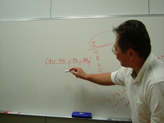
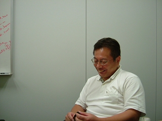

Rubyist Hotlinks 【第 20 回】 石塚圭樹さん
はじめに
著名な Rubyist にインタビューを行う企画「Rubyist Hotlinks」。今回は記念すべき Rubyist Magazine 3 周年を飾るにふさわしく、Ruby の名付け親である石塚 圭樹さんにお話を伺いました。非常に盛りだくさんの内容となっています。お楽しみください。
プロフィール
irb の作者であり、Ruby の名付け親でもある石塚さん。代表著作は『オブジェクト指向スクリプト言語 Ruby 』。
- 好きな言葉
- 無為自然
- 尊敬する人
- なし
- ご本人のサイト
- なし
インタビュー
- 聞き手
- ささだ
- 語り手
- 石塚さん
- 野次馬
- arton さん
- 日にち
- 2007 年 8 月 5 日
- 場 所
- 秋葉原
目次
プロフィール
ささだ 今日はお忙しいところありがとうございます。どんどん質問させていただきたいと思います。生年月日、出身地、現住所、家族構成はいかがでしょう。
年齢
石塚 1963 年。昭和 38 年だな。 1963 年？ あってるよね？
arton あってますね。
石塚 7 月 3 日ですね。Ruby の月ですね。
arton ちなみに私も 7 月。
ささだ おお。arton さんは何年？
arton 61 年だから、僕の方が二つ上か。
ささだ まつもとさんはどの辺ですかね？
石塚 まつもとさんはねぇ……忘れた。3 月1だよ。
arton 俺達よりちょっと若い。 64 年か 65 年じゃないかな。
石塚 ああ、僕より二つ下だ。 65 年じゃないかな。
ささだ 65 年ですか 。へー。私は 79 年ですよ。
石塚 ずいぶん差がある。ギャップがあるなぁ。
ささだ お二人の近くに中田さんが入るんですかね。
arton たぶん。咳さんとか、意外と年なんだよね。
石塚 咳さん……どうなんだろうな。
ささだ RWiki に昔、年齢の話が書いてありましたよね。2
石塚 やっぱ年取ってるグループなんだよな。二つ下……たぶんまつもとさんは二つ下なんだよね。三つかも。でも二つだよ、たぶん。
ささだ なるほど。
出身地
ささだ 出身地は。
石塚 一応、埼玉ね。現住所は、横浜。
ささだ じゃあ、あんまりウロウロはしていないというか。
石塚 浜松に居たことはあるんだよね。そこでまつもとさんと一緒に仕事やってた。
ささだ そうかそうか。ではその話は後で。
石塚 浜松は Ruby 発祥の地なのかなぁ。たぶん、誕生したのは浜松なんだよね (笑)。ものが実際できたのは……浜松なんだろうな。
arton やっぱり浜松っていうと、夜のプログラミング言語っていう感じだね。
ささだ 何で？
arton え、夜のお菓子っていう有名なお菓子があるじゃん。
ささだ あ、そうなんですか。
石塚 知らない？うなぎパイ、うなぎパイ3。
ささだ うなぎパイは知ってますけど。夜なんですか、あれは。
石塚 夜のお菓子。ノーマルのやつは夜のお菓子で、あと、うなぎパイ VSOP ってのがあって、それは真夜中のお菓子なんだ (笑)。ブランデーが入ってるさらに高級版で。
ささだ へー。
石塚 あと、お昼のお菓子っていうのがあるんだよ。これはえび塩パイっていう、何かちょっと違うやつなんだけど。
一同 (笑)
ささだ 浜松は何年居たんですか？
石塚 浜松……よく覚えてないんだけど、何年ぐらいだろう。たぶん 5 年ぐらいかな。
ささだ そういう知識がたまるぐらいには (笑)
石塚 奥さんの実家が浜松だしね。
ささだ なるほど。
家族構成
ささだ 家族構成。
石塚 二人。奥さんと。
ささだ なるほど。
好きな言葉、座右の銘
ささだ 好きな言葉、座右の銘。
石塚 好きな言葉……好きな言葉ねぇ。あんま無いよねぇ、普通 (笑)
一同 (笑)
石塚 座右の銘とか、ちょっとねぇ。そういえば高校の時にさ、篆刻ってハンコ作ったことがあるんだけどさ、ひとつは自分の名前で、もうひとつは中国のことわざみたいなやつで、四文字熟語というか、四文字とは限らないんだけど、何か彫れっていうのがあったんだけど。それだと『無為自然』って作ったな。その時はそれが良いと思ったに違いない。一所懸命考えた結果。
ささだ それはなぜ彫ろうと思ったんですか？
石塚 それは授業で。書道の中の一環として、そういう彫る話があった。
arton かっこいい書道だな。書道って、これ(筆で書を書く手振り)しかやんないのかと思ってた。
石塚 高校の頃はそういうのをやるみたい。うちの学校ではやってた。そのハンコのやつは、県の大会とかあったみたいで、そういうのに出したりしてたみたい。自分の名前のやつは、一応入選ぐらいなんだけど、県の大会とかに発表されていたみたい。
ささだ すばらしい。
arton そういうデザインセンスが、今も生きているっていうやつだな。
石塚 それ、デザインもあるのかな、確か。
ささだ 『無為自然』は老子の言葉。と、Wikipedia に書いてありました。
石塚 確かに。良く分からんけど、意味は (笑)
一同 (笑)
石塚 高校の頃って、漢文とかもやるしね。
ささだ あー、なるほど。
arton 『無為自然』っていうのは、政治のひとつの理想じゃん。王様は民を居るを知らず、民は王様を居るを知らず。それでもちゃんと税金が自然に集まって皆仲良く暮らせる。
ささだ というのが、いい態度？
arton そういう政治を理想とする道徳観というか、国家感か。
ささだ でかいですね。
石塚 よく分かんないね、今となっては (笑)
arton 老子の言葉って、コアしか書いてなくて、コンテキストが何にも無いからさ。どうとでも解釈できるんだよね。
ささだ なるほど。
arton コンテキストが無い。
石塚 コンテキストフリーだったのか。それ、意味無いじゃんね。意味が分からないってことじゃん。
一同 (笑)
arton 好きなように解釈して良い。
ささだ じゃ、座右の銘は『無為自然』。勝手に作ってる感じですよね、これ (笑)
尊敬する人
ささだ 尊敬する人。
石塚 尊敬する人もねぇ。今となっては中々ねぇ。
一同 (笑)
石塚 尊敬する人、難しいよなぁ。ちょっといないかな。いないっていうのもあれだけど。尊敬っていうか、偉いなと思うのは、まつもとさんとかは偉いなと思う。
ささだ ほう。
石塚 偉いって言うか、何て言うんだろう。個人的な付き合いもあるから、人間性とかも含めてね。あるかなとおもうね。後は、まぁそうだなぁ。偉い人と個人的に付き合えてないから、分からないけど (笑)
ささだ 別にこういうのって、個人的な付き合いってのは無いんじゃないんですか？
石塚 いや、やっぱし尊敬するっていうのは、人格的に尊敬できなきゃ駄目じゃん (笑)
arton そこで『無為自然』で老子とか出てくるのかと思うじゃん。
石塚 老子ね、確かにね。でも老子とか……尊敬するとかいうレベルではなさそうだね (笑)
代表作
ささだ 代表作。
石塚 代表作？やっぱあれかな。シェルかな。
ささだ シェル？
石塚 shell.rb ってあるんだけど (笑) 知らないでしょ？
ささだ いやいやいや。知ってますけど。確か誰かが 1.9 から外そうよとか言ってた (笑)
石塚 ほんとに？(笑)
arton 代表作は irb でいいと思うんですけど (笑)
ささだ ぱっと思いつくのは irb ですよね。まぁ、Ruby って言ってもいいのかもしれませんが。Ruby の名付け親として。
石塚 名付け親ねぇ。でも僕が作ったわけじゃないからな。この辺が中々微妙な話でね。
ささだ shell.rb は……
石塚 外せって？それもひとつの案だよな。
ささだ namespace が、すごいの取るから嫌だっていう話だったかなぁ。
石塚 namespace？Shell って名前使ってるから？
ささだ そうそう。Shell クラス。
石塚 だって、shell.rb なんだもん、Shell でいいじゃん。
一同 (笑)
著作
ささだ 著作。
石塚 著作？ 本？
ささだ たくさんありますよね。私はオブジェクト指向データベースの本は買いましたけど。
石塚 本当？ありがとう。
ささだ 古本屋で。
石塚 古本屋で？ そうか。古本屋でしか手に入らないのか、もしかしたら4。
ささだ そうかもしれないですね。あれは面白かったですよ。
石塚 それとか……一応最初は、オブジェクト指向プログラミングってやつなんだよね。
ささだ あー、はいはいはい。
石塚 あれは私が会社に入ってすぐだから、昭和 63 年か。西暦何年だか良く覚えてないけど。
ささだ Amazon で検索すると、『ソフトウェア要求管理』っていうのが一番上に来てるんですけど。
石塚 それはね、翻訳っていうか監訳。
ささだ これは新しいんですか？
石塚 新しいっていうか……それは Rational のやつだよね？
ささだ ピアソンで 2002 年。そんなに新しくは無いですね。
石塚 それが最後の本なんだよね。僕が関わっている本というと。
ささだ 『UML リファレンスマニュアル』。2002 年 1 月。1993 年 4 月、『オブジェクト指向プログラミング』。
石塚 ん、何年？
ささだ 二つ出てますね、同じのが。
石塚 ああ、そう。改訂版とね。
ささだ 88 年が最初。
石塚 そうだそうだ、88 年だ。古いな……。あ、その前にもう一個あるんだよね。
ささだ 何ですか？
石塚 1983 年、『Smalltalk 入門』ってやつ。これは僕が書いたって訳じゃないんだけどね。たぶん出てこないんじゃない、これ。
ささだ 出てこないですね。
arton これ、どこの会社のやつ？
石塚 これはアスキー。
ささだ あと、『プログラミング言語 Ruby』と。
石塚 そうそう。これを忘れちゃいけないじゃないですか。これは 99 年か……。本当は 2005 年に出てなくちゃいけないのがあるんだけど、出てないね。3 年毎ぐらいにでてるみたいだからな。
ささだ 今度何かドカンと。
石塚 いやー、中々ね (笑)。書くのも大変なんだよね。
ささだ 大変ですよね。
好きなメソッド、嫌いなメソッド
ささだ 好きなメソッド、嫌いなメソッド。
石塚 そうねぇ、好きなやつはなんとなくやっぱしあれかな、僕の場合は。やっぱ module_eval かな。
ささだ ええ！
arton ただの eval じゃなくて、module_eval なんですか？
石塚 やっぱ、メソッド定義しないとね (笑)
ささだ なるほど。
石塚 いや、eval も使ってるけど……。
ささだ define_method ではなくて、module_eval を使うと。
石塚 だって、define_method って知らないもん (笑)
ささだ その頃は無かった？
石塚 その頃は無かったというか……。define_method って、そういう高度なやつがあるのね、最近は。
ささだ 最近はあるんですよ。
arton define_method っていうのは？。
石塚 文字列を渡すわけ？ どうなってるのそれは。
ささだ define_method は、ブロックを渡して、そのブロックがメソッドになるっていう。
arton ほー。
石塚 ブロックってことは、式そのままっていう話だよね？ 静的なんだよね？ 文字列じゃないんだよね？
ささだ 文字列じゃないです。
石塚 そっかそっか。
ささだ そこでスコープがぐちゃぐちゃなんですよ。ブロックだから上の参照が取れちゃうっていう。そうすると、クラスの中で定義したローカル変数に対して参照ができるので、C++ の static 変数みたいなことができる。
arton それは module_eval とどう違うの？
ささだ module_eval でメソッドを普通に定義する場合だと、文字列も渡せるし、ブロックも渡せるけど、定義したメソッドはコンテキストが全然違う。スコープが切れるので、そこは取れないんですよ。
arton そうか、なるほど。
石塚 そうか、define_method か。
arton define_method は、1.9 feature？
ささだ いや、define_method は昔からありますよ。
arton え、そうなの？
石塚 うそー。
ささだ 何言ってるんですか！
石塚 昔からは無いでしょー。
ささだ 1.6 にはありましたよ。
石塚 ほんとに？
ささだ 私が Ruby を使い始めたのは 1.6 ですが、define_method はあったと思いますよ。
石塚 何か怪しいな。
一同 (笑)
ささだ 今、中村(う)さんに聞いてみたら、俺が物心ついたときにあったと言ってるんですが。
石塚 あ、ほんとだ。1.6 では、って書いてあるから、1.6 なんだなぁ……。でも、文字列渡せないと駄目なんだよ、たぶん (笑)
ささだ メソッド名が変わるんですよ、その場合。define_method は、メソッド名は自由に選べて、上のローカル変数が取りたいっていう。よく Lisp とかだと普通にできる話なんで。
石塚 Lisp で普通にできるか。できなさそうな Lisp はあるけど。Common Lisp とかできないんじゃないの？
ささだ Common Lisp だとどうなんですかね。
石塚 静的スコープしか許さないですよ。
ささだ 静的スコープだけど……。
石塚 静的スコープなのか、それは。
ささだ 嫌いなメソッドは？
石塚 嫌いなのっていうか、後悔したのは一杯あるよね。
ささだ (笑)
石塚 結構、色々リクエストして作ってもらったのも一杯あるんだけど、一番馬鹿みたいなのが。これは消してほしいんだよな。
ささだ どれどれ？
石塚 Array の中に……ええっとねぇ。たぶん、nil の数を数えるメソッドがあると思うんだよね。
ささだ nil でないアイテムだったら、nitems というのがあるけど。
石塚 それかな？
ささだ 私、今まで知らなかったな、これ。
石塚 だから、意味無いんだって (笑)
ささだ arton さん、知ってました？ nitems って。
arton 使わねぇなあ。
石塚 絶対使わないと思うよね (笑)
ささだ なるほど。その辺が後悔していると。他はありますか？
arton 知られざるメソッドの発掘の機会みたいな (笑) それでみんな使うようになっちゃったりしてね。
ささだ (笑)
石塚 これは難しいよね、使いこなすのは……。使いこなすといえば、これは後悔しているとかじゃないんだけど、正規表現の match とか良く分からないんだよね。
ささだ match？ MatchData オブジェクト？ Regexp#match？
石塚 そういうの無かったっけ？ これはねぇ、何が返ってくるか良く分からないんだよね (笑)
ささだ MatchData オブジェクトを返すと書いてあります。
石塚 MatchData オブジェクト？ match じゃなくてもう一個の方かな……。
ささだ この辺は確かに難しいですよね。
石塚 何か、配列とか、配列の配列とか返ってこない？
arton グループが、0 にマッチした全部で、括弧の順番で 1,2,3 って返ってくるのかな。だから配列みたいにも扱える。
ささだ String#scan じゃないですか、それ。
石塚 そうだ、そっちかもしれない。String の方の scan か。そっちだきっと。これはねぇ、何か使いたい用途に合っているようで何か良く分からないっていう。色々考えないと使えないという。使えないって言うか、間違っちゃうっていうね。これがねぇ……。普通に正規表現で、=~ でマッチして、変数取り出せばいいっていう話なのかもしれないね。
ささだ 何が難しいですか？ 多重配列で返ってくるので、括弧で囲むって所ですか？
石塚 括弧っていうか、返ってくるのが配列の配列になっていて、良く分からない。こうじゃないと困るんだろうけどね。
ささだ なるほど。
石塚 いつもこれ、使ってるときに悩む (笑)
Ruby に関して
Rubyist になったきっかけと、Ruby 昔話
ささだ Rubyist になったきっかけ。
石塚 きっかけ。きっかけは難しいんだよね。最初っからでもないんだよね。一回離れてるからねぇ。
ささだ というと？
石塚 最初に Ruby って名前をつけるきっかけになったのは何年だっけ？
ささだ 93 年ですか？ 94 年？
arton 94 年っていうのは、メーリングリストで公開した時？あ、メーリングリストじゃなくて、NetNews か。14 歳になったっていうのは、どこからだっけ？
ささだ 名前が決まった日じゃなかったっけ。
arton っていうことは、まだ fj とかで評価しているわけじゃないから、その頃か。
ささだ fj デビューが 95 年？ 94 年とかそんな頃？
石塚 一番最初は 93 年か。93 年の 2 月 17 日？ 違うのかなぁ。正式な Ruby の誕生日っていつになってたんだっけ。
ささだ 2 月 24 日です。
石塚 24 日？ 24 日に名前が決定したのかな。
arton それまでは何て名前だったんだっけ？
石塚 いや、とりあえず Ruby ってことにしたんだよね。
arton 名前がつく前から、まつもとさんは作ってたんですよね、きっと。
石塚 いや……。
arton コマンドにまだなってなかったのかな。
ささだ それは、2006 年の Ruby 会議で、高橋さんが紹介した ruby-dev の記事がありまして (ruby-dev:5173)。
石塚 これが 2 月 17 日なんだよね。
arton Tish とか言ってたのか。
ささだ このチャットのきっかけって言うか、言語の話をしだしたのは、何かあったんですか？きっかけみたいなのは。
石塚 きっかけ？
ささだ 普通にお隣に居たとか、そういう感じなんですか？
石塚 まつもと君は上の階に居たんだけど (笑)。上の階にいたっていうのも変な話なんだけど。
ささだ 同じ会社？
石塚 同じ会社。
ささだ やってる仕事は全然違う？
石塚 近い。近いって言うか、一応同じようなことをやってたんだけどね。ま、それとは関係ない。仕事とは関係ないんだよね、これ。たぶん、まつもと君の席に行ったら何かやってたんだよね。そのときにたぶん、そういう言語が欲しいなってやってたんだと思うんだけどさ。
ささだ 何かやってたというのは、言語設計してたとか？
石塚 言語設計って言うか……そういうレベルになるのは、たぶんもうちょっと経たないと始まらないから。
ささだ 席に行って何をやってたんですか？
石塚 何かモゾモゾやってたんだよな (笑)
一同 (笑)
石塚 僕も、もうよく覚えてないんだよね (笑) 何かモゾモゾやってて、話して、それで何かそういう言語が欲しいねぇという話になったのかなぁ。良く覚えていないんだよな。立ち話のことは記録に残ってないからね (笑)
arton その頃は、コンピュータは何を使われてたんですか。その頃から Linux じゃないですよね、無いから。
石塚 NEWS。NEWS だから、4.3BSD だね。
ささだ 仕事中にチャットして？ では無くて？
石塚 チャットじゃなくて、直接話したんだよね、その時ね。
ささだ このログは？
石塚 これはチャットで話してるんだね。これは仕事中だな (笑)
一同 (笑)
ささだ いつの間にかそんな話になっていたと。
石塚 いつの間にかって言うか、そういう話をしたんだと思うんだよね。
ささだ Perl みたいな言語を作ろうと。オブジェクト指向でもっとまともなやつ。
石塚 そうそう。っていうか、その前にね、実は別のやつをやってたんだよ。僕はその頃研究部って所にいて、まつもとさんにもやってもらってたんだけど。研究部でやってたのは、もうちょっと硬い言語だったんだよ。
ささだ それはお仕事でやってた？
石塚 そうそう。仕事。
ささだ 硬い言語っていうと、型とかそういうのがきっちりしているという意味で硬い？
石塚 僕も良く覚えてないんだよな。昔のことで……。
ささだ こっちの仕事の方の言語は成功したんですか？
石塚 いや、途中で研究部自身がなくなったんだよね (笑)
一同 (笑)
石塚 大体、そのころの会社はもう無くなってるし。無くなったって言うか、どっかに吸収されちゃってるしね。
ささだ なるほど。で、それを話していたらその中で Ruby っていうのを自分で作りたいって言う。
石塚 話してっていうか、それをやってて、それをやっているときは研究部は無くなるって決まった後に、何かモゾモゾやってたんだよ、たぶん。まつもとさんが。で、もうちょっとパーソナルなやつがやりたかったんじゃないの5？ よく知らないけど (笑) そっち(研究部でやっていた言語)は今の(Rubyのこと)と似ているところもあるけどね。動的だけど型があった気がするな。
ささだ そういう言語をお仕事としてやってたんですね。
石塚 僕が？
ささだ ええ。その辺の人たち。
石塚 やってた。ちょこっとだけね。
ささだ もっと他の仕事がある中で？
石塚 それは言語というより、プログラミングシステムというテーマだったから。言語が好きなのはまつもとさんね (笑) 環境が好きなのはこっちなんだよ (笑)
arton あー、なるほど。
ささだ へぇー。Ruby と irb の関係みたいなね。言語と環境かぁ。
石塚 そうそう。それで、最初は一緒にやろうっていう話……これはあまり威張れる話じゃないのであまり話してないんだけど、やろうって言うことで始めたんだよね。で、最初は、言語担当がまつもとさんで、やっぱりライブラリは僕がやるっていう話で進んでたんだけどさ、途中で僕が転職しちゃってさ。
ささだ (笑)
石塚 そのまま……半年ぐらいはそんな感じでやってたんだよね。で、転職したんだけどさ、転職先がメールとか使える環境じゃなかったんだよね。93 年だもんね。10 年以上前の話だからメールとかネットとかそういう時代じゃなかったんだよね。仕方ないので放っぽっていたら、まつもとさんが頑張ってやっていたと (笑)
ささだ おー。じゃあ、いつの間にか大きくなっていて感動の再開みたいな感じだったんですか？
石塚 それ以来ずっと音沙汰が無かっただろうな。僕も良く覚えてないけど。わざわざ紙の手紙をやり取りするような間柄じゃないしね。
一同 (笑)
ささだ じゃあ、fj とかでの議論はまだ後なんですね、きっと。
石塚 そうそう。fj に流したのが……それはまつもとさんに訊いたほうが分かりやすいのかな。
ささだ まつもとさんはたぶん 95 年ぐらいに 0.9 を流して。
石塚 その頃ケーラムに居たのかな？ まだ NTS かなぁ？
ささだ 95 年 12 月 21 日に、ニュースグループに、fj.sources に、という感じですね。
石塚 95 年 12 月？
ささだ そうですね。
石塚 それはまだ新しいな。もっと古いのがあるな。12 月の何日だって？
ささだ 12 月 21 日。
石塚 じゃあ、その前があるんだよ。よくわかんないんだけど、Ruby アルファテストメーリングリストってのがあって、それが 95 年の 2 月。僕が入ったのは最初っからじゃないんで、もうちょっと前からあるんだと思う。
arton そのメーリングリストには誰がいたんですか？
石塚 これ？これはメンバーの一覧とか採ってないんだよね。残念なんだよなぁ。でも何か、ほとんど誰も知らないような気がするんだけど (笑) 残ってる人って……。
arton 95 年って、どうやって募集したんだろう？
石塚 fj に流してるんだと思うんだよね。アルファテスト始めますので来ませんかって言って集まってきたんだと思うんだよね。
ささだ なるほど。
石塚 この頃は、Ruby 0.65 とか言ってたんだよね。
ささだ へぇー。0.65 なんてバージョンが。
石塚 この頃は毎日のようにバージョンが上がっていったっていうか、なんていうか。
ささだ それを色々まとめて、0.9 としてリリースしたと。
石塚 12 月はたぶんね、このアルファテストメーリングリストが 12 月 18 日なので、たぶんこれが終わって ruby-list メーリングリストに変わったんだろうな。この頃はもうケーラムに居るんだな……。と言っても、この頃はそんなに Ruby をいじってないんだよね。
ささだ 片手間という感じですか？
石塚 本格的に、メーリングリストにちょくちょく出るようになったのが、たぶん Ruby にはまった頃っていうことになるんだよね。96 年ぐらいかな。96 年ぐらいからは、結構ちょくちょく。
ささだ ruby-dev は最初は無かったんですもんね。
石塚 ruby-list が ruby-dev なんだよね (笑)
ささだ 97 年に、ruby-list から ruby-dev が分離されたと。高木浩光さんが「分離した」って書いてますね。
arton ruby-list が新しく生まれた感じなのかな。最初から居る人って、ただのユーザーじゃなくて、dev とイコールだよね。ただ、ruby-list って名前を使っちゃったもんで。
石塚 そうそう。
ささだ まぁ要するに、開発＝ユーザーだった時代だってことですよね。
石塚 今はあんまり流量が無いけど、昔は ruby-list にかなりのメールが流れていた。
ささだ まぁ、今でもそれが引きずられているみたいですね。敷居が高いっていうか。
arton 返事、返ってこないし。
石塚 返事ねぇ。
ささだ 簡単なのは結構返ってくるけど。
arton 俺が出して返事が返ってこないのはどうなったんだろう。
ささだ どれどれ？
arton Hash の最後の引数の括弧を must にするって日記に書いてたやつ。撤回されたんですよね？って訊いたんだけど……。
ささだ それは ruby-list じゃないんですよ。
arton え、list だろあれは、どう考えたって。
ささだ まぁ、分かんないけど……。 93 年とかなんですね。まつもとさんとのお付き合いみたいなのは、もっと前からなんですか？
石塚 えーっと、彼が会社に入ったときからだから。もっと前だよ、それは。それより一、二年ぐらい前かな。
ささだ なるほど。91 年ぐらいから？
石塚 同じ部なんだけど、違うのは作っていたんだよね。
ささだ ふんふん。その頃から言語マニアの人が居るっていうのは？
石塚 言語マニアっていうか、その頃は言語って感じでやってないんだよね。普通のソフトウェアを書いてたから、言語は必要ないもんね。
ささだ はー。じゃ、まだ隠してたんですね。
石塚 隠してたっていうか、そういうのを専攻してたっていうのは知っていたけどね。自分で作ったライブラリとかは、メソッドを動的に結合っていうか、動的に呼び出すようなやつで作ってたよ。
ささだ へぇー。
石塚 そこは、許せなかったんだろうね。
一同 (笑)
ささだ なるほど。
現在の Ruby との付き合い
ささだ 現在の Ruby との付き合い。
石塚 現在の Ruby との付き合い。仕事ではないからな。趣味 (笑) ていうか、あれだよね……。
ささだ メンテナ？
石塚 メンテナ……まぁ、そういうのもやってるけど、自分の環境をサポートするために使っている感じかな。
ささだ それは普通に？
石塚 色々。まつもとさんなんかは、シェルスクリプトが多いみたいなことを言ってたけど、僕は大体、今は Ruby で書いてるよね。一行だったらシェルで書くかもしれないけど。Makefile の中身はシェルで書くしかないんだけど、あとは Ruby で書いてることが多いよ。
ささだ Ruby は最新版を使ってるんですか？
石塚 最新版ってどれ？ 1.9 系のこと？ (笑)
ささだ いや、1.8.6 のこと。
石塚 昔は開発版を使ってたんだけどさ、デバッグできないでしょ、最近の1.9 系って (笑)
ささだ debug.rb が使えないということですか？
石塚 ついこの間まで使えなかったじゃない。
ささだ いや、今でも使えないですけど (笑)
石塚 でしょ (笑)
ささだ じゃあ、debugger はよく使う、と。
石塚 いや、debugger っていうか、トレーサーを使うことが多いんだよね。スレッド周りとかを見るときに使うことが多くて。
ささだ トレーサーはあまり使ったこと無いなぁ。
arton 普段のちょっとしたことに、トレースを使う必要のあるプログラミングをしているのかっていうのがちょっとした疑問なんだけど。
石塚 ちょっとした時じゃない時なんだろうね。さっき言った、シェルなんかちょっとしたことじゃないんだけど。スレッド一杯立ち上がるからね。デバッグするの大変なんだよね。どれが何処で何が動いているのか分からないんで。で、あれは 1.8 でデバッグして、それで動きそうになったら 1.9 で動くなーってやってたんだけど。でも 1.8 で動くからって 1.9 で動くとは限らないからね。
ささだ 昔のバージョンでは使えないとかで、1.1 使ってますとかそういう答えが返ってくるかと思ってたけど、そんなことはない？
石塚 全然。
ささだ 原先生が、まさに blade を 1.1 で動かしてる説っていうのがあるから。
石塚 いや、結構騒がれるけどね。そんなに互換性が無いと思ったことは無いけどね。でも、あるんだよね？
ささだ 細かいところが変わっていて。騒がれるほどではないと思うんですけどね。
arton 分かってる人は、地雷を踏まない。
ささだ (笑)
石塚 1.9 であれが変わったよね。メソッド名（Object#methods などが返す値）が Symbol になったよね。
ささだ そうそう。
石塚 あれが大きく変わったよね。で、さらに途中までは変わってよかったと思ったけど、Symbol が String のサブクラスだったでしょ？
ささだ はい。
石塚 その頃はたぶん動いてたんだけど、そうじゃなくなったでしょ、最近。それで動かなくなったのが結構あったな。
ささだ あ、そうですね。あれはまつもとさんのせいですから (笑)
石塚 他に何か変わったのがあったよね。……文字が数字じゃなくなった？ いや、そんなこと無いよな……。
ささだ あー。はいはい。?a って書いたら、これは文字列 “a” という意味になると。
arton えっ、1.9 ってそうなの？
ささだ うん。0x646 だっけ、こういうのじゃなくなる。
arton それ、困るんじゃない？
石塚 これは結構大きな違いかなと思ってるんだけど。
ささだ あと、もっと大きな違いがあって、String#each が無くなる。
石塚 あー。何で？
arton each_byte は残る？
ささだ えっと、String#each 自体が無くなる。each_lines か each_bytes か、どっちを取るのか分からないので消してしまえ、という議論に。each_byte、each_char、each_lines の三種類があるから。
arton それは良いんじゃない？
石塚 三つに分けるのね。
ささだ たしか前から、ありませんでしたっけ？ each_lines は無いのか？ 1.8 にはそういうのが無かったので、どれになるか分からないから、無くそうっていう。
石塚 無くすって、デフォルトの振る舞いでいいんじゃないの？
ささだ デフォルトの振る舞いだと、色々文句が出るからという。
arton each_line とか each_byte とか、スペシャライズされたやつはあるんだけど、ただの each ってのはなくなるんだ。
ささだ 無くなる。each_lines と each_bytes は 1.8 にもありますね。
arton each_char が無いんだ、今は。each_char って、当然 M17N を意識した char？
ささだ そうそう。
arton 良いね。すごく良いな。
石塚 でも irb は動いてるから平気なんだろうな。
ささだ その辺は動いてなければ、もう手を入れていると思うので。
石塚 知らないうちに手が入ってることがあるんだよね (笑)
ささだ まつもとさんとか。
石塚 ちゃんと見てないと、いじられたということも分からない (笑)
ささだ 確かに。String#each はなくなります。それはでかいですよね。
arton あれ、おかしいな？ each_bytes？ each_byte？
ささだ each_line と each_byte でした。
arton 全部単数だよね。
ささだ 単数でした。で、青木さんなんかは、each_line を each にしようって言ってたんだけど、それは通らなかった。
arton 俺は char が each なのかなって気がするけどな。だって、文字列なんだからさ。
石塚 split でやってるから大丈夫なのか。
ささだ なるほど。
石塚 何でだろう。文字として扱いたかったのかな。String として扱いたかったのかな、一文字一文字を。
Ruby の好きなところと嫌いなところ
ささだ Ruby の好きなところと嫌いなところ。
石塚 好きなところ……。難しいな。でもやっぱ触ってて楽しいかな (笑)
ささだ ほう。
石塚 Smalltalk を最初にやってたときも、結構楽しかったけど、それと同じような感じはあるかもしれないね。
ささだ なるほど。
arton 歴史的に――バージョン 0.6 になって、0.9 になってということだけど――その場その場でこの feature が良いなとか、なくなっちゃってがっかりだなとか、これが付いて良くなったなとか、長い歴史を追ってきた人として、そういうのはありますか？
石塚 そんなに細かいことは覚えてないよね (笑)
一同 (笑)
石塚 メタレベルプログラミングを行う機能が多いのはうれしいのかね。
ささだ はいはい。
石塚 嫌だって人も多いけど (笑)
一同 (笑)
ささだ リフレクションとかですよね。
石塚 うん。スーパークラスを変えられるようにしてほしいんだけどな。
ささだ Ruby で数少ない、コンパイル時に分かる情報なんですよね。super って。
石塚 別にコンパイル時に分かるからって、変えちゃいけないって理由にはなってないよね。自分のクラスを変えられるっていうのもあるけどね。今はその辺もできないよね。
ささだ 確か Smalltalk にはある？
石塚 become: でしょ。
ささだ become:。確か、2004 年 の Ruby カンファレンスで、まつもとさんにそれをつけろって言った人が居て。それは駄目だっていう風に。
石塚 そうか。
ささだ Ruby の内部実装で T_FOO 何とかってあるじゃないですか。タイプを指定する。あれが変わったときにバグるのでっていう。
石塚 バグるかなぁ？
ささだ 例えば、String が Array になったときに、そこの変換をきちんとやってないとバグるっていう。
石塚 丸ごと全部変わるんだったら関係ないと思う。変数にそういう型の情報は入ってないでしょ？
ささだ いや、入ってます。RValue が変わるから、RString から RArray に変わったときにそこの変換をきちんとやらないといけない。
石塚 いや、丸ごとコピーすればいいんでしょ？ だって固定幅なんだからね。
ささだ いやいや、RValue の 5 ワード制限があるじゃないですか。
石塚 become: ってスワップなんだよね。こうあるじゃない。5 ワードごとの……。
ささだ あれ、クラスが変わるんじゃないんですか？ become: って、RBasic の、クラスの情報をぱっと入れ替えるっていう、その話かと思ってたんだけど。
石塚 そこ以外を入れ替える。

ささだ あ、そうなんですか。どう使うんですか？
石塚 どう使う？ become: って、Smalltalk で良くあるのは、配列のサイズを変えたりするのに使ってるんだよね。Ruby 流に言えば、クラスの…… Array じゃないな。何かコンテナ。これだと変数宣言できないからあれだよね (笑) 何かちょっとあれ何だけど。例えば変数で、contents とかあったとするじゃない。固定の配列。(図に書いて説明)7。例えばコンテナと、これを become の B のコンテナってやると、この先自身が入れ替わるんだよね。
ささだ なんだろう。Array の replace とかそういうイメージですか？
石塚 そうそう。そうすると、このオブジェクト自身は変わらないんだけど、中身の参照しているこれが入れ替わるので。
ささだ 入れ替わるんですか？共有するんですか？
石塚 共有じゃない。入れ替わる。become: って、スワップなんだよね、本当は。
ささだ ふーん。スワップだったら良いですね。
arton B の方のコンテントは、逆に A になるの？
石塚 そうそう。
ささだ へー。
石塚 だから、こっち側は一時的に作ったものであれば、GC されてそのうち消えて無くなる。
arton でも、become: って名前が良くないよね。
石塚 使いたいのは become(〜になる) だからね (笑)
arton become だったら、B を共有だとしか思えない。
ささだ 最初に Smalltalk がどうしてこんな名前に作ったのかっていう。
石塚 だから、そういう配列のサイズを変えるとか、そういうのに使ってるんですよね。
ささだ あんまり become という感じではない。
石塚 それは、まつもとさんとも同じ話をした覚えがあるんだけど (笑)
一同 (笑)
石塚 スワップなんだよっていう話をした。スワップはできるはずなんだよね。
ささだ スワップだったら、全然問題なく。
石塚 クラスを変えるのは無理だろう。
ささだ クラスを変えるものだとばっかり思ってました。
石塚 クラスを変えるのは難しいか。確かに、File とかは変えられないもんね。かえると動かなくなっちゃうもんね。
ささだ そうそう。すぐバグります……。へー、知らなかった。良い話を聞きました。
石塚 Ruby ってオブジェクトのテーブルってあるじゃない？ 同じように Smalltalk もオブジェクトのテーブルってあるから。名前は忘れちゃったけど。だから、同じようにできるはずなんだよね。
ささだ そこを入れ替えればいいっていう。
石塚 そうそう。入れ替えができると、何か色々楽しいんだよね、本当はね。成り済ましができるからね、知らん振りして。
ささだ スパゲッティがますます (笑)
石塚 いや、これはメンテナンスの機能だから、別に普通に使えって話じゃないからね。
ささだ なるほど。
arton A と B っていうのは、同じクラスのインスタンスなんですか？
石塚 いや、別になんでもかまわない。
arton 何でもかまわない？ ああ、でもそうか。元ネタがあるから、大きくなってるわけじゃないのか。
石塚 え？大きくなっても大丈夫。オブジェクトテーブルの入れ替えだけだから、何だっていいんだよね、オブジェクトはね。
ささだ 確かに。それだったら全然問題なくできますね。
石塚 変なのとスワップすると動かなくなるけどね。クラスと普通のオブジェクトとかね。
ささだ 後で大変なことになりますね。
石塚 やっぱ、宣言しないと駄目なのか。任意は無理なのね8。
arton ものによっては、最初に呼び出したときと、次に呼び出すときとで変わってると前提しないと、戻ってきたのをさわったら地雷になってたってのもありそうですね。
石塚 それは、たぶん無いんだと思う (笑) スワップだからね、たぶん大丈夫なんだよね。スレッドがらみでどうなのかなって、気になったりするけど。
ささだ 考えたくないですね、これは (笑) というわけで、そろそろ話を戻しますか。
arton 嫌いなメソッドは言ったけど、嫌いな所は言ってない。
石塚 嫌いな所ね。
ささだ そもそも好きな所も言ってない？
arton 好きなところは、スワップが無い。違うね (笑)
一同 (笑)
ささだ 何でスワップの話になったんだっけ。
arton become が無いって話で。
石塚 それは嫌いなところじゃないけどね、別に。
ささだ 歴史の話をして……という。
石塚 そうね、嫌いな所ね……。うーん、メソッドがファーストオブジェクトじゃない所かな。
ささだ 欲しいですか？
石塚 最近、APL とかやってみてたんだけどさ9……。そういう理由で文句を言うのは変な話なんだけど (笑)
ささだ いや、よく言われてますよね。Python だったら括弧を付けなかったらメソッドオブジェクトが返ってくるのにって。
石塚 そうそう。そうなってても良かった気もするんだけどね。
ささだ いやー。
石塚 Python でできるってことは、別にできるんだよね。
ささだ 括弧っていうのは、apply 演算子であって、メソッドオブジェクトが返ってきて、それにアプライしてるっていうのが、Python のモデルじゃ無いかなと勝手に思ってるんですけど。
石塚 うんうん。
ささだ で、括弧が無いと、Ruby の場合は普通に呼んじゃうので。
石塚 括弧が無いと呼ぶけど、それが悪いのか？ 良くわかんないな。
ささだ メソッドオブジェクトがあると、何が嬉しいんですか？
石塚 関数の演算ができる (笑)
ささだ lambda、proc とかじゃだめ？
石塚 proc ……足し算、引き算ができないもんね (笑) 僕も良く分からないんだけどさ。
ささだ 足し算する proc を返しちゃ駄目？
石塚 ん？足し算する Proc？ それはきれいに呼べればいいんだけど。呼べないんだよなー。
ささだ ああ、.call って書かないといけないし。
石塚 そうそう。そこがファーストオブジェクトかどうかの違いなんだろうけど。ま、そんなこと文句言ってもしょうがないんだろうけどね。
ささだ なるほど。環境責任者として……。
一同 (笑)
石塚 責任者じゃないけど (笑)
ささだ 環境に対して文句は？
石塚 環境、何も無いもんね、だってねぇ。いや、そんなことは無いのか。何か色々あるみたいだけどね、知らないうちに。
ささだ まぁ、IDE でもいいですし、ライブラリ環境でもいいですし。本当はこれ作りたかったけど、まだ無いから嫌だとか。
arton 何で、completion って最初から入ってないの？
石塚 completion？ 何の話？
arton irb の話。
石塚 それ、Ruby の文句なの？(笑)
arton いや、環境の話。readline ライブラリが入っていない環境があるからとか。
ささだ arton さんが、irb に対して文句を言っている (笑)
石塚 入っては居ますよね。ただ、引数つけないと駄目なだけで。completion って Emacs で動かしている人には関係ないしなぁ。いや、関係なくも無いのかなぁ。
arton でも、入ってても別に困んないですよね。
石塚 確かに。何もいえない。
ささだ (笑)
石塚 最初、僕は readline ライブラリを持ってなかったら。いや、関係ないのかな？ 関係あるんだよね。
arton 多少は関係するかもしれない。
石塚 でも、readline は自動的に読み込むんだよね、今は。
ささだ そうなんですか？ completion 使わないから分からない。
石塚 completion はねぇ、完全なら良いんだけど、あんまり完全じゃない所が僕は好きじゃないのかな。例えば、ごまかしているところがいくつかある。別にそれが悪いっていう話じゃないと思うんだけど。rtags もそうなんだけどさ、ちょっといまいちなんだよね。
ささだ irb の completion がどの位まできちんとやっているのか知らないんですけど、検索する範囲ってどれ位なんですか？
石塚 検索っていうか、そのオブジェクトっていうか……。
arton 現在の self でやってるだけなんじゃないの？いや、実は知らないんだけど。
ささだ でも、オブジェクトのクラスは分からないじゃないですか。
石塚 分かるから、そういうのは平気なの。分からないのは例えば、(書いて説明しながら) Hash っていうか、文字列として何かこう言う風にきたところで、complete されたらどうしようかなとか。
ささだ それは Hash だと分かる。
石塚 Hash か proc か分からないんだよね。
ささだ ああー。
arton 確かに。
ささだ それでも単純に、メソッドの引数が arg って渡ってきて、これこう completion やったらどうなるとか。
石塚 それは、変数ならやるんだけど、関数だと駄目なんだよね。関数を呼び出したら副作用出ちゃうからね。
arton 確かに。
石塚 ああ、ref の中はどうしてるんだろう。見てないような気がする。
ささだ completion ってここの話じゃないのか。そうかそうか。分かりました。
arton String#split が、spr かっていう人はあんまり居ないけど、そういうときに便利だよね。
ささだ どうやってるのか分かった。irb だと変数の中を読めちゃうから。それでクラスが分かると。
石塚 これ、何が出てきてるんだろう。でも何か出るな。
ささだ Ruby の組み込みクラスのシンボルを全部読んでも、シンボルの数は千六百いくつなんですよ、確か。だから、それ全部を検索対象にしてしまえばいいじゃないか、とは思う。
石塚 あー。制約できるところはしてるだけなんだよね。制約というか。
ささだ 分かるところだけ分かって、分からないところは現在のコンテキストにあるシンボル全部取ってきて。
石塚 だから、そうなってるの (笑)
一同 (笑)
石塚 だから、その辺が逆にいまいちかなと。
ささだ あー、それは駄目なんだ。
石塚 駄目とは言わないけど。
ささだ 候補がバーっと出てくるんですか？
石塚 そうそう。変数にちゃんと代入されていれば出る。さっきのはどうなるんだろう。全部出たのかな。
arton フィルタリングされてるから、そんなにたくさんは出ないんですよね。ドット(.)でいきなり押すことはあんまり無いから。
ささだ なるほど。
石塚 確かに。ドットの後に何か入れればね。確かにその通りかもしれない。
ささだ まぁ、大体分かりますもんね。
arton うん。とりあえず、長いメソッドを打たなくていいから楽だよね。
石塚 でも、僕はあんまり使ってないですよね。
ささだ completion を？
石塚 Emacs 上で使うことが多いので。ちょっと Emacs 上に組み込めばいいんだけどね。めんどくさくてやってないという。
ささだ completion を有効にするオプションってどれですかね。
arton require ‘irb/completion’
石塚 最初にオプションで、-rirb/completion でもいいけど。
ささだ ほう、出た。おおー、知らなかった。こんなにメソッドがあるんだって。
石塚 そうそう。確かにそうなんだよね。
ささだ ただ、1. ってやってみただけなんですけど。496 possible。へぇー。
石塚 使えないじゃん、それじゃ (笑)
一同 (笑)
arton 候補が 100 以上の八回続けて押したら、あなたはまだ使うべきではありませんっていって、off にしちゃうとかね。
石塚 そうか。ドットで使うからいけないんだな。ちょっと入れるんだな。当たり前か。シェルでもそうですもんね。ちょっとは入れますもんね。そうか、もうちょっと使い込まないといけないな。
一同 (笑)
石塚 completion をね。irb は普段使ってるんですけどね。
ささだ それこそ、電卓代わりから、プログラムまで？
石塚 いや、電卓はね、bc なんだけど (笑)
一同 (笑)
石塚 なぜか知らないけど。
ささだ じゃあ、シェル代わりですか？
石塚 シェルじゃなくて、Ruby の振る舞いをちょっと見たいときとかに使うんだよね。
ささだ (笑)
石塚 いや、何かね。Perl だと -de0 ってあるじゃないですか。
ささだ ええ。
石塚 それやると、デバッガが動く。デバッガというか、インタラクティブに評価してくれるモードになって、そこで式を入れると何かやってくれるんですけど。それが欲しかったんですよね、きっとね。bc じゃないよきっと (笑)
ささだ irb の名前、最初は rbc だったって話は。
石塚 rbc って名前だったんだよね、確かに。
ささだ 計算したかったわけじゃない？ 計算機が欲しかった？
石塚 計算機が欲しかったんだけど、確かに。
ささだ でも、bc の方が慣れてるし、と。
石塚 そうそう。
一同 (笑)
石塚 bc もね、いちいち scale とか入れなくちゃいけないから、めんどくさいんだよね。でも最近 bc の話題が Ruby の何かで出てましたよね。
arton 出てた出てた。
石塚 x/1 が 0 になるとかあったけど、1.0 って入れればよかったんだね、これ。知らなかった (笑) 見た目で有効数字が決まるようになってるとは知らなかったなと思って。いつも scale って入れてたのに。scale って、文字打つの長いし、めんどくさいなと思って。
ささだ なるほど。じゃ、irb で何かユーティリティー的というか、仕事でちょこっと使うってことはやらないんですか？
石塚 仕事？
ささだ 仕事というか、ちょっとしたシェルスクリプトの代わりにちょこちょこって書くときに。普通は ruby -e？
石塚 いや、ruby -e は無いよね。それだったら irb だと思うけど。
ささだ 田中哲さんは、絶対に -e なんですよ。
石塚 あー、そうかもしれないね。irb は怪しいバグを生んでたからね、昔。コンテキストは、今は何のコンテキストを使ってるか良く覚えてないけど。
arton -e は一気に打てるから楽だって。irb は一瞬またないと駄目じゃん。
ささだ 起動しっぱなしにしておくんですよ、そこは。
石塚 テストとかやるときは、いつも起動しっぱなし。
ささだ じゃあ、Ruby の挙動チェックにしか使わないんですか、irb を。
石塚 そういうことになるね (笑)
一同 (笑)
ささだ それは私も同じなんだけど。irb は Ruby の仕様を調べるとき使う。あれ、石塚さんは irb を便利に使ってはいないんじゃないですか (笑)
石塚 これ以上便利なことは無いと思ったんだけど違うのかな、おかしいなぁ (笑) だって、シェルの代わりにはならないでしょ。ls ってやってリストするわけじゃないし。
ささだ いや、シェルスクリプトの代わりって言ってたじゃないですか。それは普通に Ruby スクリプトを書く？
石塚 あー、そうそう。シェルスクリプトっていうか、バッチの話だよね。それは irb で書く必要は無い (笑) バッチ的に使うときに、Ruby を使うのね。
ささだ Ruby のプログラムを書くときに、ちょっとこれはどうかなって時に、irb でちょこちょこってテストしながら書く。
石塚 そうそう。確かに、シェルみたいなことがしやすいのを作れば良いんだけどね。
ささだ それこそ、lib/shell.rb は。
石塚 いや、それだけだと……。
ささだ 足りない？
石塚 何ていうのかな、いちいちファイル名入れるのに、ダブルクォート入れたくないでしょ。
ささだ (笑)
石塚 ちょっと違う言語になっちゃうんだろうね、結局。
ささだ なるほど。よくネタで起動時のシェルを irb にするっていうのが。
石塚 (笑) ……無理があるよね (笑)
ささだ なるほど……。嫌いな所ってなんでしたっけ、結局。arton さんが、completion が無いのが嫌いって話か (笑)
石塚 そうそう。
arton 環境 の話になってたからね。
石塚 嫌いなところ、って無いよね。嫌いって言うか、この間 Java にあって、Ruby に無いものを調べてたんだけどさ、一杯無いよね (笑)
一同 (笑)
石塚 そういう状況ではあるよね、やっぱね。
ささだ 特にこれが無いというのは。たくさんあるからあまり特定のものは無い感じですかね？
石塚 やっぱ GUI 系とかはあっていいと思うんだよね。
ささだ Tk じゃなくて？
石塚 僕はそういうの嫌いなんだよね。何か他から持ってくるっていうのは。
ささだ なるほど。ちゃんとした Ruby 標準のインターフェースを作って、後は下が何とかしろと。
石塚 あると嬉しいなとは思うけど、作る人は大変だよね。
ささだ まぁでも、API を偉い人がガッって決めちゃえば何か作れるような気がするんですけど。たぶん API をそろえるのが難しいんじゃないかと。
石塚 そうですよね。Java とかならあるからなぁ。
ささだ AWT とか Swing とか。
石塚 それで書いてる人居るのかな、今。居るんでしょうねまだね。
ささだ まだ居るんですかね。
arton 居るみたいだよ。
石塚 Swing とか？
arton Swing 使って。RIA の時代だよ。リッチ何とかアプリケーション10。
石塚 そうか。逆に戻ってきてるのかそっちに。
arton いや、やっと今のパソコンがまともに Swing 動けるようなスペックになった。
ささだ あー。
arton スカスカ動く。
ささだ 重いって言うことは無くなったと。
arton うん。
石塚 そうか。うちのツールとは思えんな、良く考えたら。
arton だって、Eclipse とか NetBeans とか、みんな、ニコニコしながら使ってるんですよ。90 年代には考えられないじゃないですか。
石塚 確かにね。時代は変わったよね。
一同 (笑)
石塚 昔は画面一枚出すのにも大騒ぎだったもんね。
arton なんだったかな。なんとかスタジオクリエイターかな。なんちゃらカフェとか。起動するだけで、コンビニにでも買い物に行くか、みたいな (笑)
石塚 たしかに (笑) ……嫌いなところって言ったら、さっき言ったあれ、関数の奴。
arton ファーストクラスオブジェクト。
石塚 別にそうしろって言っているわけでも、嫌いだといっているわけでもないんだけど、そうだったら良かったのではなかろうかって、今思うような感じかな (笑)
Ruby を使った成功例
ささだ Ruby を使って、成功だった、うまく行った事例。難しいですか？
石塚 なんだこれ (笑) 成功？ irb とかね、みんな使ってくれてるよね……。失敗だったのは shell かな。
一同 (笑)
ささだ shell のどの辺が。
石塚 使ってないでしょ、誰も (笑)
一同 (笑)
arton さっきの話にちょっと戻っていいかな。メソッドがファーストクラスオブジェクトじゃないっていうのは、引数のための括弧がいらないというのと、矛盾してるんだよね？
ささだ はい。
arton b(a) ってしたときに、ここで b っていうメソッドを呼ぶときの引数として、a って単に書いたときに、これが今だとメソッド呼び出しになっちゃう。そういうことだよね？ a.call ……だから今はこう呼ばないとだめですよ、もし呼びたいなら。ただこれが入れた proc オブジェクトがそのまま渡ります。で、どっちが得かって言ったら、今のところは括弧を書かないでメソッドが呼べるほうが幸せな人たちが Rails の方にいっぱいいるから。
ささだ Rails じゃなくても、私は幸せですけど。
arton 僕も幸せ。
石塚 括弧を使わないで良いって、Pascal からだよね11。Pascal とかはどうなんだろうね。ファーストオブジェクトじゃないのか。
ささだ Pascal は良く知らないです。
arton Pascal って違うんじゃないのかなぁ。
石塚 そういうものは扱えないよね、きっとね。硬すぎて。関数なんて型は無さそうだよね。
ささだ 確かに。
石塚 まつもとさんに訊いたほうが分かるかな (笑)
ささだ 今度機会があれば。
Ruby のキラーアプリケーション、ライブラリ
ささだ Ruby のキラーアプリとかライブラリ。
石塚 僕ね、UNIX の色々なマシンを持ってるじゃないですか。過去の歴史も含めてね。それ毎に画面のサイズが違ったり、微妙に環境に違ったりしてるじゃないですか。それをログイン時に環境変数とかその他設定するようなプログラムを作ってるんですよ。これがないとログインもできないっていう (笑)
一同 (笑)
ささだ 環境整備用の Ruby スクリプトがあると。
石塚 Ruby スクリプトというか、コンフィグレーションファイルがマクロ言語みたくなってるんですけど、それを Ruby で。昔は Perl だったんだけど、Ruby に置き換えたという。だから、昔は Perl が無いと生きていけなかった (笑)
一同 (笑)
石塚 やっとのことで Ruby に置き換えた。やっとのことっていうか、結構最近ですよね、置き換えたのね。あとは、ネットワークにつなぐ奴か。普通、UNIX とか Windows とかでもいいけど、どうしてるのかなって。会社から接続したり家につないだり、あとモデムでつないだり、色々あるじゃないですか。自分のところの DNS サーバー立ち上げてるから、DNS サーバーのコンフィグレーションを変えたりしてるのね。で、そういうのを変える Ruby のスクリプトがある。
ささだ その辺は、普通の人は全部 DHCP で全部お任せだからいいんじゃないですか。
石塚 DHCP じゃできないんだよね。自分が DHCP のサーバーだから。
ささだ 自分が？
石塚 これが DHCP のサーバーになってるから、DHCP のサーバーの上のやつを設定する。DHCP コンフィグレーションファイルそのものを変えなくちゃいけないから。DHCP の普通の接続の仕方じゃ変えてくれないから。そこまでは。何でこうなってるのか良く分からないけど、ネットワークに接続していないときに、DHCP サーバーが無いとエラーが返ってくるのが遅いので、こういう風にしたんだよね。
ささだ へえ。
石塚 普通、接続しない場合はローカルっていう DHCP のモードになっていて、アドレス解決しようとするとすぐエラーを返すのね。こんなものは知らんって。そうしたかったがためにこうなってる。それとあと、キャッシュしたかったんだろうね。
ささだ なるほど。
石塚 モデム環境は遅いからね。キラーアプリって言っていいのか知らないけど、無いと生活できないからね (笑)
Ruby の習得
ささだ Ruby の習得は簡単でしたか。
石塚 あー。
ささだ 習得って言うかどうか、よく分からないですけどね。まつもとさんに、こんな仕様どうって言って、それをすぐ納得できたとかそういう感じですかね。
石塚 うーん、特に……。でも昔は色々聞いてはいるみたいだね。ここどういう意味ですかとかね。でもまぁ、そんなに苦労した感じではないね。
ささだ バックグラウンドが。
石塚 何か変な仕様だなと思ったところはあるかもしれないけど。でも何かチュートリアルとか見て何か質問とかしてるよね。チュートリアルで、ハッシュのキーを何で比較してるかとかね。この辺は昔と今では仕様がたぶん違うんだよね。
ささだ 分かんないですね、あの辺は。考えたくないですね。
石塚 eql?
ささだ うん。
石塚 昔は == だったんだよな。でもだめじゃないのって変えたんじゃないかな。
ささだ デフォルトは eql? と == は一緒で、変えられますよねっていう。
石塚 そういう風になったんだよね。
ささだ まぁ、一緒に作ってるんだから、そんな……。
石塚 いや、作ったって言うレベルじゃないので (笑) 最初の方の仕様しかやってないからね。それも何か、できたものが同じかっていうとずいぶん違うような気がしないでもないし。
ささだ なるほど。
石塚 そうそう、仕様の話で言ったら、面白いのがあったよ。今って、+ とかで終わって明らかに行が継続してると、自動的に次につながるじゃないですか。あれが無かった (笑) 無いような仕様にするって言ってるのを、やめてくれって頼んでいるところがあった。
一同 (笑)
ささだ じゃ、これはシンタックスエラーになった？
石塚 バックスラッシュで継続するんだろうね、きっと。
ささだ なるほど。まつもとさんは、バックスラッシュで継続すればいいじゃないと。
石塚 そうそう。そんな感じだったんだよね。
ささだ じゃ、配列とかも改行できなかったんですかね。
石塚 それを許さないと怒られちゃうから、きっとそういうのもあって、そうなったのかなぁ。この間昔の奴を見てたんだけど、結構昔は面白かった。面白かったじゃなくて、こうだったんだっていう。カンマも無かったんだよね、引数に。
ささだ カンマ？
石塚 メソッドの引数にカンマなし。だから本当にシェルっぽくしたかったんだよね。
ささだ おおー。
arton 何が困るかって言うと、メソッド呼び出しができなくなる。
ささだ いや、それは呼べるんじゃないですか？
arton ああ、括弧を入れればいいからか。
ささだ えっと、括弧の省略ができない。
arton うん。結局それに尽きるね。
ささだ Haskell とかは無いんですよね、カンマ。
arton うん。
ささだ あれができないですね。if 1+2 ……これが……。
石塚 何か、四角括弧でくくれって書いてあるな。
ささだ 四角？
一同 (笑)
石塚 1+2 のところ、四角括弧でくくれってなってるよ。何だろうこれ。良く分からないんだけど。ほんとうかなぁ。違う言語かこれ。
arton それ、配列渡してるんだか何だか分からないな。3 っていう一要素の配列なのかもしれない。
石塚 ああそうか。ここで決まったから 2 月 24 日なのか。コードネームが Ruby って決まったのは確かに 2 月 24 日か 25 日なんだな。
ささだ なるほど。それはチャットの話ですか？
石塚 チャットじゃなくて、これはメール。いや、直接話してたのを何かしてたのか良く分からないんだけどね。……なんでこんな話になったんだっけ？
ささだ 習得の話。
石塚 習得の話か。それで歴史の話になっちゃったんだね。習得といえば、call/cc とかは良く分からないよね (笑)
ささだ 私もよく分からないですね。
プログラミング全般
初めてのプログラミング
ささだ プログラミング全般の話。初めてコードを書いたのはいつですか。
石塚 これはねぇ。もう大学 1 年のときだから、いつだろう。18？
ささだ 大学 1 年のとき。何を触ったんですか？
石塚 最初はアセンブラ。
ささだ アセンブラ？その頃は何のアセンブラなんですか？
石塚 Z80。PC8812。
ささだ あー、はいはい。それは大学 1 年だから、授業ではなく趣味？
石塚 1 年はそう、趣味で。バイトして買ったんだな、パソコンを。
ささだ それまではそういうのに興味が無かったんですか？
石塚 無かったって言うか、一応数学一辺倒だったからな (笑) そんなことも無いのか。あんまりコンピュータって感じじゃなかったよね。
ささだ なんでそんなところで、ゼッパチを。
石塚 ゼッパチは買わないよ。PC88。何かコンピュータをやりたくなった。
ささだ 数学にはコンピュータであるっていうわけではなく。
石塚 数学科にコンピュータは必要ないんだよね。
ささだ (笑)
石塚 何か欲しかったんだね。友達の影響かもしれないね。
arton その頃買えるようになったっていうのも、一個あるよ。
石塚 そうそう。一所懸命、夏の間、アルバイトしてね (笑)
ささだ パソコンのために。パソコンじゃないのか。
arton いや、PC はパソコンだからいいんだよ。逆に、パソコンという言い方は NEC くさいから嫌、という人も居たぐらい。
石塚 NEC だったけどね。そうそう。
ささだ それでアセンブラで？
石塚 最初はアセンブラ……だって、まだ C とかもまともに走らないしね。
arton ROM BASIC か何かが入ってますよね。
石塚 普通の BASIC は入ってるけどね。
ささだ BASIC は使わずに？
arton 最初から無視なんだ。あっさり。
石塚 無視っていうか、使わないことは無いけどね。BASIC もね。
arton 8801 っていきなり ROM BASIC が動く奴ですよね？
石塚 そうそう。
arton だからアセンブラ書くって言っても、実際は BASIC で PEEK、POKE って世界じゃないですか？
石塚 いやいや、アセンブラは別に買わないといけないんですよね。CP/M とか。あと、ASCII からへんなアセンブラが書けるツール13とかがあって、それを使ったんだと思う。何だったかな。名前は忘れちゃった。
arton 最初から力 (りき) が入ってるな。
ささだ いきなりアセンブラってすごいですよね。
石塚 だって、アセンブラでしか作れないんだよ、(実用的な)ものは。
一同 (笑)
ささだ それは、何か作りたいものがあって買ったんですか？
石塚 それがね、不思議だよね。別に無いんじゃないのかなぁ (笑) ゲームを一所懸命やったっていうのはあるかもしれないけど。それで、大学二年から、コンピュータ関連のところにアルバイトに行ってるんだよね。大学一年の時から行ってるのかな。その頃は Pascal とかもやったし、あとは Lisp とかも。ちっちゃい Lisp なんだ。μ Lisp とかがあったから、そういうのとかをやったりしてたけどね。
ささだ なるほど。
石塚 で、多分大学 3 年か 4 年に Smalltalk と出会うんだな、きっと。大学 4 年かな？ あれ何年だったかな……。1985 年というと、22 歳。というと、やっぱり 4 年のときか。4 年のときに Smalltalk と出会ったんだな。で、それからしばらく Smalltalk にハマってたと。
ささだ それは大学にあったんですか？
石塚 大学じゃない。その頃 ASCII でアルバイトをやってて、ASCII で Smalltalk の本を作るっていう理由で、Smalltalk のマシンを買ったんだよね。Tektronix 4404 っていうマシンだったんだけど。当時、多分 500 万円ぐらいしたんじゃないかな。
ささだ (笑)
石塚 本を出すためにマシンが買えるという。良かった時代だったよね。
ささだ それは誰向けの本になるんですか？ 500 万とかのマシンで……。
石塚 それは別にどうだって良いんじゃないの。企画さえ通れば。
ささだ (笑)
石塚 この頃はね、出版もまだバブルの頃だから良かったんじゃないのかな14。
ささだ あー、なるほど。
石塚 でも本が出た後は、そのマシンを使う人がいないから、そのまま僕が貰った。貰ったというわけじゃないけど、しばらく借りてた。
ささだ まぁ、占有して、という感じですね。
石塚 そうそう。家に持ち帰ってたもんね。
ささだ え、ちっちゃいマシンだった？
石塚 ちっちゃくないよ。でかいよ。こんなにでかいんだよ。それを車で持ってったんだよ。
arton 電源は普通の 100V で良いんですか？
石塚 110V なんだけど、一応動くんだよ (笑)
ささだ 専用マシンなんですね。
石塚 あれはね、専用マシンって言うか、一応変な OS15 があって、その上で Smalltalk って形になるんですけどね。でも結構ね、サクサク動いたんだよ。
ささだ では、Smalltalk でオブジェクト指向にがっつりつかったっていう。
石塚 そうそう。
ささだ アセンブラはがんがんやってたんですか? それとも、アセンブラでちょっと基本やって。
石塚 アセンブラはね、ゲーム作ったり (笑) 僕ゲームの本も絡んでるんだよね。何かね。
ささだ ゲームの本？
石塚 そう。何かそう、ゲームを作りましょうっていう本。それ用のゲームを作ったりもしてるんだよね。
ささだ アセンブラで。
石塚 うん、アセンブラ。だから、アセンブラで結構やってるんだよね。
arton 代表作は。代表ゲームは？
石塚 代表ゲーム (笑) 別に売りもんじゃないからな。その本の題材のやつで。なんかスクロール型のやつを作ったんだよね。
ささだ でも昔の雑誌だと、そういうゲームとかを投稿して載せるとか。そういうのやってたみたいですけど、そういうのにも？
石塚 投稿したことない。てか、もうそういうところでアルバイトしてるもんね。
ささだ なるほど。
石塚 アスキーとかね。
ささだ 載せる方だったと。で、Smalltalk でもゲームとかやってたんですか？
石塚 Smalltalk で？
ささだ Smalltalk で。まあ、作っても誰も動かせないような気はしますが (笑)
石塚 ゲームは作ってないなあ (笑)
ささだ じゃ、まあ自分で使うと。使うっていうか、何に使うんですか？家持って帰って。
石塚 家持って帰って？ でも、いろんなライブラリとか、何か 3 次元表示のライブラリとかね、作ったりしてたよなあ。3 次元関係、Smalltalk にはその当時無かったからね。あと、何かフラクタルのやつを何か表示して遊んだりしてたよ、何か。
ささだ なるほど。
石塚 あと何作ってたかなあ、なんかよく覚えてないなあ。
ささだ 大学のレポートを書いたりとか。
石塚 大学は数学だから、コンピュータ要らないんだって (笑)
ささだ レポートとか要らないんですか？
石塚 コンピュータは必要ないね、少なくとも。
ささだ あー、なるほど。
石塚 ワープロ機能ないしね、Smalltalk ね。
ささだ なるほど、確かに。
Ruby 以外のプログラミング言語
ささだ えーっと、Ruby 以外のプログラミング言語で何を使いますか？ 何が好きですか？
石塚 最近使ってるのは、Ruby、使えるのはね、C とか C++ とか。
ささだ Smalltalk は使ってないんですか。
石塚 Smalltalk 最近使ってない (笑) それこそ、確かめるのに使うくらいだよね。Smalltalk ってここどうだったかなって (笑) Smalltalk はやっぱね、環境が閉じてるからね、やっぱ、ちょっと今イチだよね、何か今となっては。あとは elisp かなあ、よく使うのはね。
ささだ じゃ、環境は Emacs と。
石塚 Emacs だね。Emacs ないと生きていけない。Emacs というか、XEmacs だけどね。
ささだ なるほど。Java とか使わないんですか？
石塚 Java? Java ね、全然知らないんだよね (笑)
一同 (笑)
ささだ そうなんだ、それスゴい意外ですね。
石塚 そうそう、だから僕、最後に仕事でプログラムしたの、もう 10 年くらい前なんだよね。
ささだ ほー。
石塚 それ、C++ でやったやつだけど。それ以降やってないね、Java も。あー、言語といえば UML を使うけれどさ。そっちが仕事なのね (笑)
ささだ なるほど。
石塚 うん、そっちだもんね、分析とか設計とか、そっちの方の話。
美しいソースコード
ささだ えっと、今まで読んだ中でもっとも美しいソースコードは何ですか？
石塚 美しいも何もよくわからないけどさ。何か参考にしたのっていうと何かな、あのー、X10 のサーバのソースコードとか、よく読んだよね。
ささだ それはわかりやすかったとか。
石塚 わかりやすいっていうよりは綺麗っていう。まあ、わかりやすいはわかりやすかったけどね。結局あれって、クライアントと繋いでさ、いろんな処理をするわけじゃない。マルチクライアントの処理をやってくれるシステムではないですか。
ささだ うんうん。
石塚 で、その当時、手元でソースコードが、そういうの手に入るっていったら X くらいだったんだろうなあ、きっと。あと NFS もあるけど、NFS より X の方がちゃんとやってるしなあ。その頃データベースのサーバっていうか、今で言うところのトランザクションモニターみたいの作ってて、で、そういうマルチクライアントのデータベースのトランザクション処理をしようってやってたんだけど、そういうのにいろいろと参考にさせてもらいましたね。
ささだ なるほど、若者は X を読めと。
石塚 X10 だよね。
ささだ X10 (笑)
石塚 うん、10 はたぶん単純でいいと思う。今さら手に入らないと思うけど (笑) あとは、まあ、人のソースコードって読まないからさあ16。
一同 (笑)
石塚 なんか、なんだろ、影響されるじゃん (笑) (他人のソースコードを読んで勉強しないことは)あんま良くないって話もあるんだろうけど17。
興味を持ってるテーマ
ささだ 今の興味を持ってるテーマ。
石塚 テーマ？ あー、あのー、さっき言ったかな、APL の話は。
ささだ APL を最近調べてる？
石塚 APL を Ruby でシミュレートします、ってがんばってる (笑) シミュレートじゃない、なんか APL の配列のあたりの振る舞いね。
ささだ Ruby で出来ないですか？
石塚 いや、だから今がんばってやっているところなの。
一同 (笑)
石塚 出来ないのは、関数の値、だからさっき言った、関数そのもののオペレーションは出来るんだけど、Ruby だと、だから、こう、関数同士を結合したり、足すとかないな、こう引数入れ替えるとか、こう何かいろいろあるんだけど、そういうのって Ruby でも書けるけど、書いたからって、それを、それこそ call で呼ばないと意味ないんで (笑) その辺はちょっと無理なのかなあって。なんか工夫のしがいがあるっていうか、工夫すれば出来るのかなって、いろいろ今ちょっと考えようとしているところなんだよね。
ささだ なるほど。今その辺が興味を持っていると。
石塚 そうそう。それくらいかな。あとはあれか、RubyKaigi2006 で発表したのがあったじゃない、あの辺はちょっと言ったっきりで終ってるので、やんなくちゃいけいかなって (笑)
ささだ 続編があるんですよね (笑) 「じゃ、また来年」とか言った記憶があります。
石塚 来年とは言ってない。その 1 って書いたから、その 2 が有るはずなのに無いっていう (笑)
ささだ なるほど (笑)
石塚 そんなもんかな、あと何があるかな。結構やりたいのはあるんだけどね。
ささだ オブジェクトデータベースとかっていうのは、まあ、あんまり？
石塚 あー、それもね、気にはなるんだけどね。ちょっと……18
ささだ 咳さんとかすごく好きそう。
石塚 咳さんやりたいって言ってたよね。
arton UML っていう意味では MDA とかは？
石塚 だから、それは例のやつでしょ。(RubyKaigi)2006 のやつ。
arton あー、そっかそっか。
石塚 でも、なんか、それ MDA とか言うと、Ruby とか何とかって話ではないから、ちょっと微妙なんだよね。モデリングツールも必要になっちゃうしね。
arton いや、そこら辺は IDE とか。
ささだ MDA っていうと最近はマスコットドリブン19という (笑)
arton 最近聴かなくなっちゃったよね (笑)
石塚 え、何が？
arton MDA。
生い立ち
ささだ じゃ、続きますかね、さくさくと。じゃ生い立ち。
石塚 生い立ち？
ささだ たとえば小学生のときにどういう子供だったとか。数学にかなり一直線だったというのは、さっきちらっと話にありましたけど、どうして数学が好きになったかみたいな。
石塚 そんな話 (笑)
ささだ 小学校のときから、数学やってたとか。
石塚 数学……数学ねえ。やっぱ考えるのが好きだからなんだろうね。数学とかは、題材があって考えて答えが出れば、それで、何だろう、正しいかどうかわかるじゃない、ね (笑)
ささだ アウトドアでしたか？ インドアでしたか？
石塚 それはインドアかな。あんまし外に出たことがないような気はするけど (笑)。
ささだ 子供のころから、外で遊びに走り回ってるイメージではないと。
石塚 いや、そんなことはないな。一番汚れてると言われてた (笑)
一同 (笑)
石塚 子供の頃はっていうか、本当に小さいころは大変だったよね (笑) いつも親に言われるんだよ、大変だったって。
一同 (笑)
ささだ それがいつの間にインドア派に。
石塚 何故だろうね。
ささだ 中学とかですかね、部活とか。スポーツとか、クラブ活動とか。
石塚 スポーツとか、あんましやらなかったね。中学校くらいかな、小学校もあんましやらなかったかな。どういう風にいったらいいのかよく分からないけど。外で遊ぶっていうか、スポーツをあんまりやらなかったかな。
ささだ で、クラブ活動とかは何か。
石塚 特にやってないよね。スポーツ系とか、なんか無理矢理やらされた覚えはあるけど (笑)
ささだ 数学との出会いとかは、どの辺にあったんですか？ 考えることが好きだということに自ら自覚したという。
石塚 気がついたのは今 (笑)
一同 (笑)
石塚 結論としてそうなのかなって (笑) 子供の頃はコンピュータとかなかったけど、同じようなことでくっつけるとそういうことなのかなって思っただけなんだけどね。でもやっぱ小学校の頃から、数学っていうか算数は好きだった。
ささだ すげー。で、大学も、そういう数学関連がやりたくて、はいってみたら、パソコン買って。
arton アスキーでバイトしてたっていう (笑)
石塚 大学時代はまだ良かったんだけど。まだちゃんと学業もやってたんだけどさ（笑）
一同 (笑)
石塚 大学院は良くなかった (笑)
ささだ 大学院も数学で、情報処理とかにはいかなかったんですか？
石塚 いかなかったね、やっぱ数学命と思ってたんだね。まあ、本当かな、よくわかんないけど。そこが人生の失敗だったかな……違うか (笑)
ささだ え、それで数学の研究ほったらかしにして、計算機の方やってたとか。
石塚 そうなんだよね、ほとんど大学院は行ってないというか。
ささだ 入ったけど、バイトばっかしてた？
石塚 バイトばっかやってたよね。
ささだ で、Smalltalk とか。
石塚 Smalltalk で遊んでたよね。
ささだ 良い生活ですよね (笑)
arton 楽しそうだよね。
石塚 Smalltalk というか、その頃から、次のヤツ、オブジェクト指向プログラミングの本を書いてみたんだよね。
ささだ 大学院の先生とか、何か言ってました？
石塚 最終的に中退したんだけどさ、最後に「そんなことやってたのか」と怒られてしまった（笑）というおまけつきだった（笑）
arton そんなことって。
石塚 そうそう、古いっていっちゃいけないんだけどさ、読んでるかもしれないからさ。
arton 「そういうのもあるよね」って言って欲しかったよね。
石塚 いや、なんかね、先生の時代はみんな、寝ても覚めても数学ばっかしやってるわけだよ。まあそれは、情報だって同じでしょ？ 数学の研究ばかりやってるわけじゃない。で、計算機(とか他のこと)はやってないわけだからね (笑)
一同 (笑)
石塚 そんな感じですかね。
ささだ 大学院を中退されて、就職されたのが、どの辺ですか？
石塚 日本タイムシェアって会社に、まつもとさんとかと一緒の。
ささだ そこで出会いがあったと。
石塚 出会うのはその 2 年後だけどね。僕より 2 年後輩なんで。
ささだ そこには研究職として入ったんですか？
石塚 なんかそのころまだ子供でさぁ。研究所が出来るって話を聞いてさ、じゃいいかなと思って入ったらさ、研究所って名前の開発拠点だったわけね (笑)
一同 (笑)
ささだ 会社の規模がけっこう大きかったという話を聞いてますけど。
石塚 その当時けっこう大きかったんだよ、たぶん。
ささだ うん、なるほど。
arton 名前から言って、確かにすごそうな感じですな。
石塚 古いんだよね、タイムシェアって(言葉が)。
ささだ 別に Smalltalk でなんとかって話ではないんですよね、きっと。
石塚 あー、でもいちおう、そういうの(オブジェクト指向とか Smalltalk とか)やってたって話で、なんだろ威張ってはいたけど。違うか (笑) いちおうね、普通の開発といっても、なんていうのかな、その社内用の開発ツールをつくる部署なのね。
ささだ ふんふん。
石塚 昔だとシグマ(プロジェクト)とかあったじゃないですか。あれとはちょっと違うんだけど、社内開発用のツールを作ろうとかっていってさ。一生懸命、社内でがんばってた時代で、その部署に僕もまつもとさんも入ったんだよね。
ささだ なるほど。なら、まだ研究よりと言う感じ、でもその頃からまさに興味のある環境の整備という。
石塚 研究開発と言う感じ。環境の整備っていってもいろいろ……なんだろ、それはまあいいや（笑） まあ、でも研究っていうとちょっとあれだけど、まあでも新しい技術ではあったね。NEWS とかやって、そうやって、大体まだ画面がでるような一般の業務系で画面とか無いもんね。ウィンドウシステムとか無い時代だからさ。
ささだ はいはい。みんな端末だった時代。
石塚 だいたい何で NEWS だったかっていうと、PC で動く、ウィンドウズなかったもんね、まだね、いや出てたのかなー。
arton 1.0 とかはあったかもしれないけど、現実問題として DOS しかない時代。
石塚 そうだよね。そういう時代だから。
arton 昔は、ほら 80 カラムのね、タイプライターみたいにぱっぱっぱっぱって書いていく時代だったから。
石塚 そういう時代だったからね。ま、そういう意味で進んでたのかもしれないな。
ささだ インターネットに繋がってたってことですからね。
石塚 えーっとインターネットというか、そのころは JUNET。繋いであったのは、いつから繋がったんだったかな。入ったときにはまだ繋がってなかったんだよね。もうちょっとたってから繋ぐようにしたのかな。よく僕もその辺は覚えてない。そういうのがすごく好きな人がいて、その人ががんばって繋げたっていう。
ささだ なるほど。でも、まだ日本にもそんなに無い時代ですよね。きっと。
石塚 うん、だからうちの上に。あれ、どこに繋がせてもらったんだっけな。JUNET は繋いでいいよって言ってくれる上流がないと繋げない仕組みじゃないですか。大学のどっか知り合いに繋がせてもらったんだと思う。
ささだ なんだろ、今の学部生とかって、もう、あって当たり前ですからね。UUCP とか全然しらない、私も知らないけど、そういう時代という。
石塚 UUCP だったね、その頃はね、確かにね。
ささだ 先進的な環境ではあったんですね。職場環境。
石塚 社外はあれだね20、社内はまあ、ネットワークとか当たり前に繋がってたからさ、社内環境。
ささだ チャットしたりとか（笑）
石塚 そう、チャットとかね。チャットは自製のやつなんだよね。
ささだ へー。
石塚 僕が作った訳じゃなくて、同僚がつくったやつなんだけど。
ささだ へー、面白い職場だったんですね。
石塚 みんなチャットを開いててさ、なんか仕事やっててシーンとしてるんだけどさ、突然みんながどっと笑ったりして、危険だよなって。
一同 (笑)
ささだ なるほど。それで、えーっと、そこの会社を何年かされて、次、ラショナル。
石塚 いや、違う。次はね、三井造船なんだよね。オブジェクト指向データベースの ObjectStore。オブジェクト指向データベースも ObjectStore とか Objectivity/DB とかいろいろあるけどね。でも、今はあんまり聞かないもんね。
ささだ うん。もう SQL でいいじゃん、RDB でいいじゃんみたいな。
石塚 私的には RDB じゃよくないんだけど、まあ、その話はいいとして (笑)
一同 (笑)
ささだ オブジェクト指向データベースをもっとやりたかったから、その会社にいったんですか。
石塚 やりたかったっていうか、それは、なんだろ。自分から選んだじゃなくて、なんか声がかかってきたんだよね。
ささだ はー。詳しいやついねえかと。
石塚 なんかね、僕もよくわかんないんだけど。どっかから紹介されて、声がかかってきたらしい (笑) で、三井造船でそういうやつをはじめようとしていたんだよね。ま、それでまつもとさんも、それがらみでちょっと。まつもとさんにもちょっと。
arton ケーラムに入ってる。
石塚 ケーラムにきたのは、僕がそのそっちに入ってもらったんじゃなかろうかと。違う、自分から入ったんじゃなくて紹介、なんかある仕事をやることになって、それでまつもとさんが欲しいぞって、人ごとじゃなくなって、それで良く覚えてない (笑)
ささだ Ruby が云々って話はもちろんないわけですね、その頃は。
石塚 そうそう、Ruby 云々じゃなくて。
ささだ まつもとさん個人が。
石塚 そう。その間に Ruby はどんどん出来てたと (笑)
一同 (笑)
ささだ なるほど、じゃラショナルはその次ってことですか？
石塚 ま、基本的にはね。でも三井造船の子会社に一回移ってるんだけどね。そのデータベースの仕事がまるまるそっちに移るってことで。
ささだ ちなみにデータベースは成功したんですか。
石塚 成功してないんじゃないの (笑)
arton いやーだって。
石塚 今の状況見ればわかるじゃん (笑)
ささだ いやいや、その作ったのはデータベースシステムじゃなくて、そのデータベースシステムつかったシステムをつくってたってわけじゃないんですか？
石塚 あーちがう。販売したり、そのコンサルティングするみたいな仕事だったんだよね。
ささだ 御社の仕事にはこれをこういう風に使うと素晴らしいよ、みたいな。
石塚 そうそうそう。それ営業だけどね。まあ、そういうのもやってたし、コンサルティングみたいな実際の開発したりとかして。
arton 実際どうでした？やりやすいですか？オブジェクトデータベース
石塚 オブジェクト指向データベースはけっこう、けっこうじゃなくて楽だと思うけどね。ただ C++ なんだよね。それに SQL と違ってインタラクティブなクエリとかアップデートとかって出来ないんだよね21。
ささだ あーなるほど。
石塚 C++ なんてスクリプトじゃないじゃない。SQL っていちおうスクリプトでしょ。そうじゃないから、データベースってね、あれなんだよね、やっぱバグあって当たり前だから。データの間違えとか。だから、簡単に修正できないとダメなんだけど、それが出来ないんだよね。
ささだ それはなんだろ、Perl とかのスクリプト言語なんかから、ちょいちょいってやれるようなのにしようとかは無かったんですか。
arton そこで、まつもとさんだ。
石塚 それとは関係ないけどね (笑) あー、でも近いところはある22。もともと、全然違う目的だけど。で、そういうのはなかったんじゃない。そのころ Perl はあったけど、仕事ではまだ使われてないもんね。
ささだ あー。
石塚 まだウェブとかないもん。そのころは。
arton ないね。ウェブだって。
ささだ perl なんてふざけるなとそういう時代だったと。遊びじゃないんだ、みたいな。
arton いや、存在知らないんじゃない、普通の人は。
石塚 んー、そうかもしれない。
ささだ なるほど。
石塚 お仕事。それこそ、まだネットでね、情報が広まるなんてこともなかったし。
ささだ ちなみに、オブジェクトデータベースは普通の RDB とかとくらべて性能は遜色ない？
石塚 遜色ないというより、速いんだよね。速いっていうか、そういうふうに最適化された構造でデータをセーブするからさ。
ささだ へー。
石塚 なんていったらいいんだろ。RDB ってね結局ね、こうレコード縦にならべて、まあインデックスとかつければちょっと変わるんだけど、ならんでるだけで、それを検索するって仕組みじゃない。
ささだ はい。
石塚 オブジェクト指向データベースっていうのは、こう、あるところにオブジェクトが入ってたら、それと一緒によく使うものを近くに置いておけば、1 回のキャッシュというか、1 回で持って来れるわけじゃないですか。だから、原理的には速くできるはずなんだよね。
ささだ すっごい大変そうですけどね。最適化問題ですよね。
石塚 最適化って、そこまで考えなくてもよいんだけどね。
ささだ なんか配置を、なんだろ。
石塚 そこまで考えなくて良いんだって (笑) だいたい速ければ良いんだから(笑)。
ささだ なるほど。
石塚 なんかそれこそ、モデリングっていうか、そういうのと近いところあるよね、きっとね。そういったオブジェクトのアクセス・パターンの分析とかね。
ささだ で、そういうのが飽きてラショナル。いや、飽きてとか嘘ですけど (笑)
石塚 飽きてっていうよりは、だから、そこでそういう仕事やめるって話になったから。他に移るって話になったんよね。
ささだ あー。もうオブジェクトデータベースは商売にならんと。
石塚 結局はそういうことなのかな。いいのかな、そんなこといって (笑) まあ、いいや。
ささだ なかなかクライアントがつかないと。
石塚 会社が本腰をいれてなかったって話も、あるかもしれないんだけどね。
ささだ なるほど。
石塚 実際に作っていたのはオブジェクトデザイン社と言う会社なんだけども、そこは今でもあるからね23。
ささだ なるほど。そっか、じゃあ三井造船がもっと気合い入れてれば今頃は。そういえば、フリーの実装って無いんですかね。
石塚 知らん。
ささだ じゃ、無いんですかねー。
arton オブジェクト指向データベース？
ささだ なんだろ、Postgres とか MySQL みたいな存在は。なんか、今流行ってるのは、それがあるからっていうのもありますよね。
arton なんかありそうな気もするが、それこそ、咳さんが自分で作ってるやつとか。でも使いたい人はむしろ作りたいんじゃない。
石塚 フリー、フリー、ただのやつ、うーん、なんか ObjectStore も一応今は、Java のただのやつとかあるみたいだけどね。ちょっと PSE って形ですけどね。
ささだ PSE というのは
石塚 Persistent Storage Engine。よくわからないんだけど、トランザクションがないとかそういうやつなのかもしれない。または Pstore と同じレベルなのかもしれない、まあ、それはないか (笑)
ささだ えーと、で UML とかそういう方のお仕事に。
石塚 そう、それからラショナルに移ったんだよね。で今に至るんだね。IBM に買われちゃったからね、あそこも。
ささだ で、UML 云々っていうのは、前からそのような話は、オブジェクトデータベースとかやってるところから、がんがん使ってたんですか。
石塚 あのころは OMT だね。ちょうど辞めるころに UML がでてきたのかな。
ささだ で、モデリングみたいなのをコンサルティングでがんがんやってたと。
石塚 えーっと、うんとモデリング、どの時代に？ えーっと ObjectStore とかをやってたころ？
ささだ なんでそんなラショナルに、みたいな。
石塚 オブジェクト指向繋がり (笑)
一同 (笑)
ささだ それもお声がかかったんですか？
石塚 いや、それはね、いろいろあったんだよね。
ささだ いろいろですか。
石塚 そのころオブジェクト指向っていうとオージス総研とか有名だったんだけど。今でも有名か。で、あとそこと、それこそ ObjectStore がらみでオブジェクトデザイン社とでどっちにしようかと思ってたんだけどさ。なんか、オージスとはいろいろと交渉したんだけどなかなか条件面等で合わないので、行くのはやめるといったら、、実はなんかこういう会社が出来るって紹介されたんだよね。
arton オージスにラショナルを。
石塚 そう。
arton そうか、あー、オージスも関連してなくはなかったのか。
石塚 半分ずつの出資なんだよね。ラショナルって。
ささだ へえ、日本の方は。
石塚 そう、オージスとラショナル社が 50% ずつの出資で作ったんだよね。
arton 確かに Rose の売り込みはオージスだったからな。
石塚 それがらみでね。そういう話があったんですよ。
ささだ じゃ、Rose とか使ったのは入ってから？
石塚 んーっとね、Rose はね、その、オージスとは付き合いあったから、前の会社でも使ってたよ。
ささだ なるほど。
石塚 すごいバグ多くてさ (笑)
一同 (笑)
石塚 すごいんだよ、なんかね、こまめにセーブしないと二度と立ち上がらなくなったりするんだよね。どうしようもない商品でさ。
arton でも高いと (笑)
石塚 まあ、高いっちゃ高いんだけど、ああいうツールはみんな同じようなもんだよね。
ささだ なるほど。
石塚 まあ、とにかくあっちはデータベースの Objectivity ってやつやってたんだよね。えーなんでオージスなんだろ。オージスの人も知ってたんだよね。だから会社としても関係があったのもあるし、それになんだろ、そのころ既にオブジェクト指向データベースの本書いて出てたんだけど、それでなんかちょっと、うちの事例だけじゃ面白くないんで、逆にちょっとそっちの事例も紹介してくれって頼みに行ったこともあるんだよね。それがらみかな24。
arton あとオブジェクト倶楽部ってあるじゃないですか、オージスには。
石塚 うん。
arton あれより前の話なんですか？
石塚 そんなもんないんじゃないの、きっと（笑）よくわかんないけど、ていうかまだウェブとか一般的でないんだから（笑） 何年のころなんだろう。まだ 10 年以上も前の話だよね。96 年か 97 年かぐらい。ラショナルに移ってからちょうど 10 年か。
ささだ なるほど。
石塚 オージスの人は、どうしても行かせたくなかったみたい。商売敵に (笑) 結果としては良かった気がするけどな。あそこはひどい目にあったみたいだからね。
ささだ (笑)
石塚 で、ラショナルで、社員一号でさ。最初、健康保険も何も無いんだよね。
ささだ へぇー。
石塚 何か、社員が居ないと健康保険組合に入れなくてさ、一号の人はそういう目にあうんだなって。一ヶ月間。
ささだ へぇー。何人くらいなんですか、最初は。
石塚 ていうかね、細かいことを言うと、ラショナルって会社はその当時アメリカで、モデリングツール作ってるラショナルと、ピューリファイ。知ってる？
ささだ はいはい。
石塚 あれ作ってる会社と、あとパフォーマンス関係でやってた、PEA か PC か何か良く分からない会社があって、その三つが合併したのね。
ささだ ふーん。
石塚 で、実は残り二つは日本に法人があったの。
arton ピューリファイの会社はあったね。ピューリファイって、バグを見せるやつですよね。メモリの開放を忘れてるとか。
石塚 そうそう。それで、日本にも法人が作られることになったんだよ。タイミングから言うと、まずラショナル社ができて、それに二つの会社が入ってきた感じになった。だから最初は(社員は)一人しか居なかった。あと、社長が一人。
ささだ (笑) それがどんどん大きくなって。
石塚 そう。一気に大きくなった。元々あったから。
ささだ 普段、どんな感じで仕事をやってるんですか？ 客先に行って、要件聞いてとか。客先に行って、客先の設計を見て、これはどうだとか。
石塚 どっちかっていうと、そういう感じなのかな。レビューとかが中心だよね、メンタリングのときは。まぁ、色々なのがあるんだけどさ。本当に初心者レベルの人のレビューってのもあるけどさ、そうじゃなくて結構、本当に難しい問題をどう解決するかとか。
ささだ 複雑なシステムがあって、それをこんな風に作ろうと思うんだけどって言われて、それをもっとこうしたほうがいいんじゃないかとか。
石塚 そういうんじゃなくて、問題って、分かってなかったら多分、さっきみたいな一般的な話になっちゃうんだろうけど。大体抱えてる問題って、見えてることが多いんだよね。で、通常の技法だと解決するのは難しいわけ。それをどうやってモデル的に解決するのかとか。モデリング的にか、それ以上やそれより下のことも含めてなんだけど。そんな感じの話をしてる。
ささだ IBM と一緒になって何か変わりました？
石塚 管理がうるさくなった (笑) 色々な意味でね。
ささだ IBM の製品ばっかりやらされるとか、そういうわけではない？
石塚 だって、うちらはそういう意味ではソフトウェアグループって製品を売る部署なので、一緒にバンドルして売ることもあるかもしれないけど。
ささだ IBMでは Ruby の勉強会があると聞きましたが?
石塚 そうそう。何かやってるみたいだよね。
ささだ そこに、石塚さんも時々いらっしゃるって言う。
石塚 時々って言うか、まだ一回しか行ったことないけど。まだ入ったばっかりなんだけどね。
ささだ なるほど。
石塚 そうなんですよ。結構好きでやってる人も多いみたい。
arton IBM って人数が一杯いるから、ああいう人が一人か二人いなかったら逆におかしいですよね。
ささだ 仕事の話なんですけど、大体客先ですか？
石塚 大体客先。客先にいることも多いし、そうじゃないことも多い。
ささだ 持ち帰ってうーんとうなるって言う。
石塚 僕の場合は、基本的には持ち帰るってことはしないんだよね。その場で答えを出すようにしている。何だか良く分からないけど (笑) よっぽど難しければ……よっぽどっていうのはちょっと違うか。さっきの話だと、こういう問題があるっていう話を聞いてれば、それに対するソリューションというか答えは前もって考えていくよね。でも、モデリングって前から順番にしていくからすぐには問題になっているところまでいかない。問題に対する答えが出てくるのはずっと後になるという意味では、考えてはいるのか。この間、電子カルテの機能モデルをどう表現するのかってことを考えなくちゃいけないことがあったけど、やっぱりそれも前もって考えてきたな25。
ささだ あー。
石塚 こういうのになるとその場ではこうすればだいたい行けるかな? ぐらいは出てくるけど、確実に大丈夫と言うところまでは行かないからね。モデルって言うか、機能モデルって何か似ているような似てないような感じなんだけどね。電子カルテとは言っても、ソフトウェアシステムであることは確かだからね。
ささだ たいていの問題は、そういうパターンにぱたって当てはまっちゃうものなんですか？ すぐぱっと答えが出てくる。
石塚 その辺がどうなんだろう。その辺がメンターとしてリスクがあるところなんだけど、逆に楽しいところなんだよね、その辺がね。即座に答えるところが。
ささだ そのモデリングって言うのは、かなり抽象度が高い話ですよね。例えばコードを書くレベルまで考えを至らしたりするんですか？
石塚 作りはしないけど、大丈夫だってことは頭の中では考えるよね。
ささだ どの程度までは下に下りますか。この件数だとちょっとこれだとまずそうだなとか。
石塚 パフォーマンスに関するところはね、モデルレベルで確認するのは難しいような気がする。実際に動かしてみないとわからないよね。
ささだ その辺は考えずに、やればできるだろうって。
arton 基本要件のところだけでいいんじゃないの？ モデルって。
石塚 そうそう。FURPS(フープス)って言って、Functionality(機能)、Usability(使いやすさ)、Reliability(信頼性)、Performance(パフォーマンス)、Supportability(サポートのしやすさ) の頭文字をとったものなんだけど、ソフトウェアに求める要求のカテゴリみたいなものがあるんだ。その他もあるんだけど。分析モデルって、大体ここ (Functionality) だよね。
ささだ ほー。
石塚 特に、最初の分析レベルって言ったら。機能レベルで、信頼性、使いやすさ、パフォーマンスとかこういうのは、アーキテクチャレベルの要素も大きいし、そういうのはやっぱり動かして確認しないとね。機能だってそうなんだけどさ (笑)
一同 (笑)
ささだ こういう下のほうっていうか、作っているところから実際にフィードバックが来て、やっぱりここのところはこうだったねっていうのってあるんですか？
石塚 一応 RUP とかだと反復開発だからなぁ。
arton なるほど。機能はもう決まったんで、後はこれに合わせて変えてくれってことになるんだろうけど、そういうんじゃないんだ。
石塚 うん。一応うちは、Architecture Centricってのを謳ってるからさ。(訳すと)アーキテクチャ中心っていうでしょうか。
arton これ全部ひっくるめて、ぐるぐる回るからってことですか？
石塚 そうそう。こういう視点で考えたことは無いんだけど……。
一同 (笑)
石塚 これ、RUP だと、何かこうフェーズってあるんですけど、知ってます？
arton 大雑把にしか知らないです。
石塚 なんかね、反復でもフェーズってのがあって、これ毎に反復がいくつか入ってるって考えるんですけど。こっちがアーキテクチュアルなリスクを解決するところ、こっちは一所懸命機能を作りこむ方。……ちょっとすみません。これは作成の「作」、これは推敲。これは方向付け。 
ささだ F って言うところは、「方(向付け)」っていう所？
石塚 違う違う。この切り分けで見たことが無いんだけど、本当は F を一生懸命作るのはここ(作成)なんだよね。
ささだ 作るって言うのは、実装するということ？
石塚 実装も設計も含めてね。推敲フェーズはアーキテクチャ的なリスクを解決するところなんで。こっち(URPS: 機能外要求)が中心なんだよね。当然確認するためには動かなくちゃいけないんで、これ(F: 機能)も作るんだけど。そんなに作らないね、そういった意味では。
arton これは分かるし、これはもちろん無いと困るし、これは面白いな。
石塚 これはアーキテクチャ。動くアーキテクチャを作るっていう。何か、XP も反復してるから似たようなもんだんだろうけど (笑)、一応こう分けてる。方向付けは、言葉通りなんだけど、どういったシステムを作りましょうかって決めるような段階で。その後の反復どのようにかするかっていう決める段階なんだよね。
ささだ でも、ソフトウェアって一個作ってみないとっていう気も。プロトタイプとかちょっと作ってみて。それもこの中に入ってるの？
石塚 ちょっと違うんだよね。自分が言ってるのは研究レベルのやつでしょ？
arton プロトタイプも 作らないんですね。
石塚 そうそう。物を作らない段階なんで(方向づけ)26。こっち(推敲)が、そういう意味じゃ R&D 的で、こっち(作成)が一所懸命作る。コンストラクションだから D なのか (笑) そういう感じ。普通の研究の人の気分だと、ここらへんを一所懸命やってる感じじゃないかと。
arton 普通のビジネスの人は、ここなんだよね。
石塚 そうそう。こっちが一杯ある。
ささだ 最後の「移」ってのは。
石塚 移行はね、ここ(作成の最後)でベータリリース。(移行は)お客さんに移しましょうってフェーズ。
ささだ なるほど。デプロイ……。
arton じゃなくて、これも回すんですよね。
石塚 普通は一回だけど、お客さんの要望によっては、段階的にリリースするとかあるじゃない。そういう時は、ここは複数ある。後は、結構複雑なシステムならね、二回ぐらいやるとか。この辺も反復の数はシステムとかによって色々違うんですよね。あと、そういった研究的な色彩が強いのか、機能が多いのかによって違ってくるし。
ささだ こういうスケジューリングもやったりするんですか。
石塚 必要であればやるんだけど、あんまり好きじゃないね、プロセスはね。
一同 (笑)
ささだ ちなみに、何プロジェクトぐらい面倒を見てるんですか。
石塚 何プロジェクト？ そうねぇ……。多いときには一度に三つぐらいは見てたことがあるけど、三つぐらいが限度だよね。大体週に一回とかになるから、三つあると週に三日でしょ。そうすると、多分なんやかんやで、ほとんど毎日どっかに行っているっていう感じになっちゃうんで。
ささだ 三つとか、頭切り替えるの大変ですね。
石塚 全然違うからね。全然違うというか、自分は知らないんだよね、そのシステムね (笑) 知らないのに大きいことを言ってるっていうのはさらに素晴らしいんだけど (笑)
arton 結構、モデルのところって、抽象的って言うか、普遍性があるからっていうことですか？ 要するに、特化したところは知らないじゃないですか。にも拘らず、モデリング出来るってことは、普遍化できるものなのかな。
石塚 いや、モデリングはしないんだよね、僕は。モデリングするのはお客さん。
arton あ、そっか。モデルの仕方をメンタリングする。
石塚 モデリングの仕方とか、出来た結果を。やってみてここが良く分からないとかがあればそれに答える。見て、やっぱここはこうしたほうがいいんじゃないかとか、そういう感じ。
ささだ そういうのって、たまには失敗するわけじゃないですか。
石塚 うん。
ささだ でも、そういうのって、コンサルって自信満々に言わなきゃならないじゃないですか。その辺はどうですか？
石塚 いや、だから自信満々に言うんだよね。
一同 (笑)
ささだ 内心ドキドキしている時もあるんですか？ それとも、たいてい合ってるから、全然オッケーなのか。
石塚 まったく出来ないってことは、多分無いからさ (笑) でも、やっぱり違いましたって言ったこともあるかな。
ささだ 私は今なぜか教員みたいなことをやってるんですけど、学生を持つと、こうだっていう風に指導しないといけないじゃないですか。でも、今の自分を考えると、絶対にそんな自信を持っていえないなと思って (笑) 似たような話だなという。
石塚 それに近いのは、どっちかというとトレーニングの方なのかなぁ。でもちょっと違うかな。
arton メンタリングなんだから、相手がもうスキルがあるというのを前提にすればいいんだから。相手を納得させることが出来ればいいんですよね。
石塚 そうそう。
arton だから、確かに私の目から見ても、これは整合性が取れていて、まったく問題ないようですね。って、それは問題あるかどうかは、実は分からない。それを聞いた、それを出して来た側が、うん、じゃこれで行けますねっと、こう自信を持たせるのが味噌なんじゃない？ コンサルってのは。
石塚 そうそう。出来た結果に対して、まったく責任取らないしね。
一同 (笑)
ささだ なるほど。分かりきった事実を教えるとか、分かりきった仕事をするとか、何か要件を満たすプログラムを作るとかだったら、大体やり方は分かってきてるんですけど、その辺が経験が全然無いので。
石塚 経験していくしかないんだろうね。それこそメタレベルなんだ、これは。
arton 俺、この手の話で初めて納得が言った話があって。それまでは、コンサルってくだらない仕事だなって思ってたわけ。でも違うんだよ、と。人間って言うのは、自分だけでは納得が出来ないんだと。例えば、タイガー・ウッズにゴルフのコーチは必要ですか？というとやっぱり必要で、実際に名コーチってのが付いている。いるんだけど、ゴルフの技術を教えるわけじゃないし、そもそもウッズにゴルフを教えることができる人間なんていない。では彼はいったい何のためにいるのかというと、うまくいった時の感触を思い出させたり、認めたり励ましたりして、納得させるんだということらしい。でもそれにはやっぱり技術がいるし、それで本来の実力以上のものを引き出すことが出来るっていうんだ。だからそこで金を取るのは当たり前で、むしろ教えれば済む人間に教えるのと違って、教える必要の無い人間を納得させるのは、すごく難しい技術がいるのだ。というのを、聞いて、そうかなるほど、言われてみればそうだなと。
石塚 教えなくちゃいけないほどのレベルでもないかも知れないけどね。大体、初めてやる人の方が多いんで (笑)
ささだ それはそれで、トレーニングっぽい話になると。
石塚 そういう意味では、システムっていうか、自分のやることは良く知ってるんだよね。それは確かだね。想像も付かないようなことをやっている人もいたからね。口では言えないけど (笑)
一同 (笑)
石塚 確かに疑わしい仕事だよね。そう言われてみればね。
ささだ Web とかでは、コンサル？ っていうのは多いですけどね。
石塚 だから、コンサルっていう言葉は使わないんだよね。メンタリ……余計分からないか (笑)
arton コンサルって、逆に幅が広すぎるしな。
石塚 そうそう。
ささだ 学生が、コンサル行きたいって言ってて。何するのそんな所行ってって。私が良く知らないので聞いてしまった。
arton 悪い言い方をしちゃうと、確かに人を丸め込む詐欺師的な戦略コンサルの考えがそうだよね。社長のところに行って、社長、こういう事したほうがいいですよって。
石塚 そうそう。
arton でも、社長が一番良く知っていて、でも迷っていて決断できないんだから、その戦略がコンサルが、あんたの考え方が正しい、っていって背中を押すのが金を払う価値がある点だって。
石塚 給料高いからね。アンダーセン27ってまだあるんだっけ。
arton ありますね。
石塚 そっか。
arton でも、技術者視点から見ると、くっだらない仕事だなって思うところはあるよね (笑)
石塚 そうそう。だからそういう意味じゃ、技術的にしっかりして無いとまずいよね。個人的な考えだけど。うちも技術的にどうなのかなって思う人が、やってるとは言わないけどさ (笑)
ささだ 石塚さんに頼めば大丈夫と。
石塚 (笑) いや、大丈夫かどうかは知らないけど。
ささだ (笑)
その他
普段の生活スタイル
ささだ 普段の生活スタイル。
石塚 普段の生活スタイル？ だれた生活してるかな (笑)
一同 (笑)
ささだ でも、お客さんのところに行くのにはやっぱり朝は早いですよね。
arton お客さんのところに行くほうが、むしろ楽なんじゃないのかなぁ。
ささだ そうなの？
arton ネクタイするとかそういうのは別の話にすると、朝 9 時に来いって客はあんまりいないよね。
石塚 9 時はあまりいない。
ささだ 自分たちも準備あるし？
arton そう。そこに対して、直接お客さんのところに回すって行ったら、その時点で 9 時に行かなくても済むって話になるじゃん。
石塚 9 時、8 時半……、なんかそういう会社もある。どういう会社とは言わないけどさ。
ささだ 9 時は大変？
石塚 大変だよなぁ。朝早いし。。。
ささだ で、何時ぐらいまでやってるんですか？
石塚 終わるのは、そんなに遅くまでやってないんだよね。
ささだ 今日のインタビューは 18 時からって話でしたけど、無理していただいた感じですか？ それとも 18 時ぐらいだったら大丈夫？
石塚 裁量労働制だからさ、時間は比較的自由になるんだよね。
ささだ なるほど。ちゃんとパフォーマンスさえ出せば。
石塚 パフォーマンスが出てるかって問題もあるんだけどさ (笑)
ささだ なるほど。普通に週二日は休んでる？
石塚 そう。
ささだ 素晴らしい。
石塚 今はそんなに忙しくないからな。最近は、土日に出たことは無いと思うけどね。その場で仕事するのが基本だからさ (笑) いいのかなって思わないでもないけど。まぁいいんじゃないのかな (笑)
仕事とプライベートの両立
ささだ 仕事とプライベートの両立は。これは答えづらいですよね。
石塚 仕事は今遅くなることも無いしね。
arton 仕事で irb 作ってるって事もなさそうだし、家帰ってモデル考えてるってこともあまりなさそうな気もするし28。
石塚 家でって言うか、在宅勤務も可だから。そういう意味では境界があいまいなところが無くは無いんだけどね。
ささだ 在宅勤務って日もあるんですか？
石塚 今日は在宅勤務って日もあるよ。箱崎の場合は、そこで仕事をしなくちゃいけないって所ではないんだよね。
趣味
ささだ 家で何かしていること。趣味。
石塚 普段家で何をしてるか？ Ruby でプログラムを組んでるか。違うか (笑) プログラムが趣味なんだよね、一応ね。仕事じゃないんだよね。今は仕事はモデリングなんだけど。
ささだ じゃ、プログラミングは結構な時間を。で、それは Ruby でやってると。
石塚 Ruby か、Elisp か。ぐらいかな。TeX もちょっとやるけどね。
ささだ TeX で何をやるんですか？
石塚 決まりきったフォーマットを印刷するのに。
ささだ それは趣味なんですか？
石塚 趣味じゃない (笑) なんかの趣味を、TeX で書くんだろうね。
ささだ あー。で、そのほかの趣味というのは。
石塚 趣味って言うか、旅行の計画とかを TeX で書いたりとか。いや、TeX じゃないんだけど、何かアウトラインのやつを TeX に変換する。印刷する手段として TeX を使うんだね。
ささだ それは分かります。しかし、旅行に行くために、プランを書くんだ、ちゃんと。
石塚 スケジュール立てるよ。結構細かいのを立てるよ。
ささだ それは会社の研修旅行とか、社員旅行とかじゃなくて。
石塚 自分ちの。
ささだ 自分ちの (笑) 立てます？
arton でも、京都に何とかの旅行に行ったら、9 時 40 分の新幹線に乗るからとか、そういうことの話じゃなくて？
ささだ いや、Web で見るけど、そんなのをメモするぐらいですよ、私は。大体この辺で間に合うとか、そんな。
arton 鉄道とか凝ったりする人は、きちんとやるんじゃないの？ ここでこう乗り換えて、この電車に乗ってとか。
石塚 まぁ、電車じゃないけどね。車だけど、車でもさ、その日のうちに何処を周って何処を周って、何処に行けるとかさ、計画立てないと何処に行けるかわからないじゃん。大体時間を読まないと。
ささだ あー、なるほど。すげー。そもそもそういう旅行を全然していないので。
石塚 そうか。
arton そこで TeX が出てくるところがすごいな。
一同 (笑)
ささだ まぁ、やるとしてもパンフレット見たいのに丸書いて、ここに行きたいとかで。で、適当に行くかって。まぁ、それでもちろん時間とかぐちゃぐちゃになるんですけど。
石塚 そうでしょ。まぁ、計画立てたからって、まともに着くのかは別なんだけどね。
ささだ 旅行とかはよく行くんですか。
石塚 旅行は結構ね。沖縄以外は全部車で行った。
ささだ それは、通ったじゃなくて、そこが目的地で？
石塚 通っただけってのもあるかな。
arton 埼玉県あたりは通っただけとかありそうだな。
石塚 埼玉県は元々住んでるとこだから (笑) でも、宿泊とかメインの旅行地として行っていないのは、多分ね、一県か二県ぐらいしかない。
ささだ それはすごいですね。
arton 車は何ですか？
石塚 車はセフィーロなんですけど。
arton おー。
石塚 あんまり車は関係ないのかもしれない。
arton いや、あんまり乗り心地が悪いと、車で色々な所に行かないんじゃ無いかなって。
石塚 あー、それはあるかもしれないよね。一回で大体、一週間から十日ぐらいでぐるぐる周るんだよ。
ささだ そんなに休暇が取れるんですか。
石塚 休暇は思いっきり取っちゃうよね。外資系は結構取りやすいんだよね。
ささだ なるほど。
石塚 ちゃんとスケジュール合わせないといけないんだよね。こういうのをやってるときはね。
ささだ これが空くから、このプロジェクトが終わったら行こうとか。
石塚 一所懸命前倒ししたりとか。
arton 労働時間って、アクティビティ図で描くとか、そういうことはしないんですか？
石塚 計画を？ しないしない (笑) アクティビティ図は描かないもん、とか言って違うか (笑) ……旅行は結構しましたね。
ささだ 年に何回も行かなきゃいけないですよね。
石塚 いやもう、結婚してから十年ぐらいだから、年に一、二回ぐらいで大丈夫なんじゃないかな。
arton 一回あたり四県入れば、一年に一回でも四十県。
ささだ あー、なるほど。
石塚 大体、三年で一周期なのかな。北の方か、真ん中か、南のほうかなんだよね。
ささだ そうか、一回の旅行で一つの所にずっといるという訳ではないんですね。
石塚 そう。転々と移動していくんだよね。北の方に行くと、最後は北海道に入ってフェリーで帰ってくるとかさ。
ささだ なるほど。
arton だから TeX が要るんじゃない、考えたら。一箇所行って、そこで泊まっちゃったら別に要らないから。
ささだ スケジュールはそんなにキッチリしなくても良いと。
石塚 そう。京都とかも行くけど、(計画は)立てるけどあんまし役に立たないよね (笑)
ささだ へぇー。旅行以外だと何かあります？
石塚 本とかだと、最近はあんまり読んでないけど SF とかね。
ささだ やっぱり SF だ。
石塚 SF の本は結構一杯あるよね、うちね。本が多いってのは SF に限らないんだよな。
ささだ どんな本を読むんですか？
石塚 それが最近はんまり読んでないんだよね。
ささだ SF が多い？他も満遍なく多い？
石塚 小説系は SF が多いんじゃないかな (笑) あとはまぁ、数学とか物理とかそういう本もあるよ。化学とかも。あと、美術関係も結構多い。
ささだ 出てれば買うって感じなんですか？
石塚 抑えてるんだけどね。本って重いしね。増えるしね。今だから壁一面が書棚になってるんだよね。横が五メートルぐらいあるのかな。結構入ってるみたい。
ささだ なるほど。濫読ってほどでもないのか。抑えてると。
石塚 抑えてるって言うか、買うのを抑えてるんだよね。
ささだ 買って読むわけではないということ？
石塚 そこが問題なんだけど、積読っていうのかな (笑)
一同 (笑)
石塚 SF とかも、サンリオ文庫って知ってる？あれが無くなったじゃん。あん時にね、一杯買いだめしたんだよ。P・K・ディックはあそこでほとんど出てたからね。全部買ったよ、頑張って。
ささだ でも結構早川とかで出てますよね。
石塚 復活してきてるよね。
arton でもザップガン29とか出てすぐにまた無くなっちゃったけどね。
ささだ そうなんだ。一番最近読んだ本は？
石塚 読んだ本？ Rails 本 (笑)
一同 (笑)
石塚 全部は読んでないけど。
arton 小説では？
石塚 小説で読んだのって言ったら、なんだろうな。スタニスワフ・レムの「捜査」だったかな。いや「枯草熱」だったかな？どっちか良く覚えてないな。結構レムとか P・K・ディックとか好きかな。
arton ディックとレムって別に近いジャンルって感じがしないんだけど。
石塚 おかしいなぁ。近いんだけどなぁ。うーん、近くないのかな。
arton ジャンルは違うけど、リアリティがあるようでないっていう意味では近いのかな。
石塚 レムも好きだけど、J・G・バラードが一番好きだよね。バラードが絡むと、関係性があるのかな。何だろう。環境なのかな。環境オタクなんだよね(笑)。
arton あー、なるほど。
石塚 なんていうんだろうな。バラードは完全にそうだよね。
arton 何か変な世界があって、そこに放り込まれて困ったりとか。
石塚 そうそう。困っているようで、実は、喜んでるんだよね30。
arton そうだな。
石塚 ディックも何か似ているような気がする。
arton 楽しいですよね。レムもそうなのかな。
石塚 レム……ソラリスとかそうなんじゃないの。
arton あー、そうか。
石塚 もうちょっと違うんでしょうけどね。レムは国が違うからね。
ささだ 分かる人には楽しんでもらえる会話なんですかね (笑)
石塚 全然 SF とかは読まない？
ささだ いや、読むんですけど、そこまではあんまり読まないですね。ディックとかはこの間読みましたけど。
arton ザップガン？
ささだ いや、ザップガンじゃなくて。
arton そうか、残念だな。
ささだ 何だったかな。麻薬のやつなんだけど、みんな麻薬が出てくるか。
arton ヴァリス？
ささだ ヴァリスとか。
arton ザップガンみたいな、読んで楽しいやつを読みなよ。
石塚 ザップガンはまだ読んでない気がするな。
ささだ 積読ですか。
石塚 やっぱ一生かけて読まないともったいないじゃん。P・K・ディックの本はもう出ないんだから (笑)
ささだ なるほどね。
石塚 趣味の話だったよね？最近はベランダ園芸にはまっててさ (笑)
一同 (笑)
ささだ それはご夫婦で。
石塚 僕がほとんどやってるような感じだけどさ (笑)
arton 花ですか。それともハーブとかそういうやつですか。
石塚 食べ物。
ささだ 何を作るんですか。
石塚 ハーブ類とか結構多いよ。思い出すだけでも結構大変なんだけど。
ささだ ほー。
石塚 聞きたい？
ささだ 聞きたい。
石塚 本当に？ あ、これは Excel で管理してるんだな。だめだな。
ささだ Excel ？
石塚 Excel からは結構離れられないんだよね。
ささだ Excel で何を管理してるんですか？
石塚 日記。
ささだ 日記？
石塚 日記というより日誌だな。水をやったとか、いつ肥料をやったとか。書いておかないと忘れちゃうんで。
ささだ おー、すげー。
arton これ、るびまにさぁ、載せたいね。園芸管理。
石塚 (笑)
ささだ すげー。雰囲気が出るのできっと。
石塚 今は何個あるんだろう。
ささだ え、ベランダにそんなに植えてるんですか？
石塚 (黙々と数えて) 40 鉢以上あるな。種類だと、20 種類ぐらいかな。
ささだ ベランダって、そんなにでかいんですか？
石塚 うちは、結構広いよ。今、80 平米ぐらいあるかな。
ささだ ベランダが！？
arton 本棚で壁一面で五メートルだからさ。
ささだ それはベランダじゃなくて、庭ではなく？
石塚 庭じゃない。マンションなので。
ささだ すごいですね、何か。
石塚 (園芸がやりたいがためにバルコニーが)大きいところにしたんだもん。でも、昔のそうじゃなかった頃も結構やってたんだよ。去年、おととしぐらいだと……。
ささだ 最近引っ越されたんですか？
石塚 そう。去年引っ越して。でも少ないなやっぱり。今年は多いかも。数えられるもんな、これ。15 株ぐらいかな。これ普通のマンションですね。ベランダの中が鉢だらけで身動きできなかった。
ささだ なるほど。
石塚 (バルコニー等は)70 だか 80 ぐらいはあると思う。東西南北にあるから。東西南北にあると言うのは変な表現だけど。
arton ベランダが東西南北にあるんですか？
石塚 なんとなくそうなんですよね。
arton 塔みたいなマンション？
石塚 いや、これは不思議なんだけど、一応角部屋なんでね。部屋の形が大体こんな感じで、ここが玄関があって……。ここがメインの部屋なんだけど、ここが吹き抜けなんだよ。こっちが南なんだよね。こっち側と、ここが入れないエリアで、バルコニーっていうか、外になっているのはこことこことこことここにあるんですよね。なんとなく東西南北にあるって言う。
arton こういう塔がどーんと建ってるんじゃなくて、こういうなんかぼこんぼこんっていう吹き抜けをうまく利用してるのか。
石塚 そうそう。こっち側はこっち側で、吹き抜けがこんな感じであるんですよ。もったいないつくりなんだけど。ここ部屋にすればいいだろうって話も無いでもないんだけど (笑) ここなんか(別の号室をさして)すごいんだ。ここは風呂場になっていて、ここで出入りできるの。外に。
arton へぇー。
石塚 どこもそうなんだけど、ミストサウナが付いていて、ここのうちは素晴らしい。暑くなったら外で涼めるという。
ささだ 何階ですか？
石塚 七階。まぁ、一番上なんだけど。
ささだ すげー。IBM 儲かるんだなぁ (笑)
石塚 IBM は関係ないんじゃない。その前からあんまり給料は変わってないので。
ささだ そうなんだ。なるほど。でもいい趣味ですよね。仕事とかで忙しい週とかあるじゃないですか。そういう時は、世話はどうするんですか？
石塚 夜。
ささだ 夜。水遣りはこういう日記をちゃんとつけて。
石塚 そうそう。
ささだ へぇー。
石塚 夏は結構つらいんだよね。私も知らなかったんだけど、ルーフバルコニーっていうのは、今年初めてなんですよ。昔は東側で屋根付きだったんで、午前中にしか日が当たらないのね。でもここって、朝は日が当たらないけど、午前 11 時過ぎると日が当たり始めて、その後ずっと当たってるんで。結構苛酷な環境なのね。まぁ、普通の畑もみんなそうだけどね。
ささだ 生き物ってみんな待った無しですよね。
石塚 そうそう。
ささだ 忙しいからちょっと、みたいなのはあれなので。
石塚 だから、一個鉢を枯らしちゃったけどさ。
ささだ やっぱ難しい。
石塚 昔と違って日当たりが強烈なので、植物も疲れちゃうのがあるみたいね。
ささだ うちのじいちゃん家は、午後 3 時とかになるとシャワーでガーっと水やりするようなのを作ってましたよ。
石塚 本当？ それは良いな。僕もそれにしようかな。
arton それは自分でプログラムを作ったの？
ささだ プログラムって言うか、そういう職だったんですよね。色々作るじいちゃんだったので。自分家でもそういう風につくったとか言ってましたけど。
石塚 昔、浜松で花博とかそういうのがあったんだけど、それでそういう暑さに弱いやつ向けにミストっていうか、何か出して温度を下げるとかやってたけどね。昔からあったんだろうね……。何の話だろう。
ささだ 趣味、趣味。
石塚 昔は結構旅行とか行って、一週間とか二週間とかいないことがあったんだけど。
ささだ そうですよね。
石塚 ここはたぶん、屋根が付いてるんで大丈夫なんで、多分こっちに全部集めるのかなとか色々考えてるんだけどね。今の水遣りの頻度だと、とても多分耐えられないよね。
ささだ 水遣りのバイトを雇う。
石塚 そういう手もあるよね。今は自動で水をやる機械とかがあるんで、そういうのを入れるというのもあるかなと思うんだよね。あと、旅行行こうと思ったら、その年は作らないとかね。
一同 (笑)
石塚 移動できないのもあるんだよね。今は苦瓜作ってるんだけどさ。西日対策を兼ねて。うち、ここが実はね、こうなってて、ここ全面ガラスになってるんですよ。真西から日がまともに当たるって言う素晴らしい環境なんだけどさ (笑) こことここに苦瓜を育てている。
arton 苦瓜って、吊るして作るんですか？
石塚 そうそう31。
arton それでいい感じなのか。
石塚 そうなんですよ。学校とかで、緑のカーテンとか言って広めてるみたいですよ。
arton しかも苦い。
石塚 苦いけどカーテンにもなるし食べれるし、一石二鳥だよね。素晴らしい。
arton 苦瓜でカーテンって気が利いてるなぁ。
石塚 うん、そうそう。見た目は結構かわいいし。
arton ぶつぶつしてて面白いですよね。
石塚 そうじゃなくて、茎って言うか幹とか葉っぱが。
arton あ、そうなんだ。
石塚 やっぱね、ヘチマは大丈夫なのかも知れないけど、キュウリとかインゲンとか、ああいう野菜系は幹が頑丈なんだよね。で、見た目が良くないからイマイチだね (笑) だって、なんかごついのがさ、ここの窓の前にあってもさ、それは見栄えしないでしょ (笑) 苦瓜でいいのかなって。それで。
ささだ なるほど。ちなみに作ったのを食べるんですか？
石塚 たべるために作ってるんじゃない、苦瓜とかはさ (笑) 食べてるよ。
ささだ おいしいですか？
石塚 なんとなく (笑) 地面に植わってるんじゃなくて、鉢でしょ？ だからちょっと小さい感じがするけどね。でも、トマトも作ってるんだけど、これは結構旨いよね。甘いし。普通の(売り物の)野菜って、結構緑のときに取っちゃう。で、取った後に熟成させるってやるじゃない。
ささだ スーパーで買うトマトって、全然甘くないですよね。
石塚 そうそう。でも、自分家でやると、完全に熟成したのが採れるからね。トマトは良かったなと思って。
ささだ なるほど。いい趣味ですね、それは。
石塚 いい趣味かどうかは分からないよ。結構手間が掛かってるからね。会社換算で、時間単位に直すと、これはいくらコストが掛かってるんだって思っちゃうんだけど。
ささだ (笑) 他に何かありますか？ 趣味で。
石塚 趣味で？他に何かあったかな。ま、そんなもんかな。威張れるといえば、この間、旅行で青函トンネルを歩いたんだよね。
arton 歩くんですか？
石塚 うん。青函トンネルの中を。時々そういうツアーをやっててさ32。
ささだ それはどっちかに車を置いておいて？
石塚 あの時は、青森まで車で行って、青森から電車で。海底駅が二つあるのね。北海道側と青森側で。で、北海道側の海底駅から、青森側の海底駅まで。二十何キロ歩いたんですけどね。
ささだ へぇー。
arton やっぱり、上り坂でつらいとかそういうのがあるんですか？
石塚 死んだ。最後。
一同 (笑)
石塚 最後、地下から地上まで歩いて上がるんだけど33、それは死にましたね (笑) それに、行って楽しいところじゃないんだよね、これが (笑)
一同 (笑)
arton 別にガラス張りになっていて、魚が見えるとかそういうんじゃ無いんですよね。
石塚 ただのトンネルなんで。それに結構湿度が高い。すべるし、良い所じゃないね。
arton それを聞くと、最悪なところじゃないですか (笑)
石塚 そうそう。でもね、うちらはただ青函トンネルの中を見物したいと思って行っただけなんだけど、結構ウォーキング系の人が参加してたみたい34。
arton 空気ってどうなんですか？ ここで排気ガスがバンバンやりながら車が来てって、どう考えても死にそうな気がするんですけど。
石塚 青函トンネルって車は無いから。
arton あ、車は無いんだ。電車だけだっけ。
石塚 そう。ただ、結構風は強いんですよね。どっちからどっちに流してるんだったかな。青森側から北海道側に流してるのかな。
arton ちょっとまてよ。車が通らなくても、空気をどっかから入れないと、どう考えても……。
ささだ だから風を。
arton あ、そうか。風が強いって、人工的に入れてるのか。
石塚 そうそう。それで、中は湿度 100%35。
一同 (笑)
石塚 あれが起こる。霧箱現象が起こる。霧箱現象って言って分かるかな。
arton 分からない。
石塚 電車が通りすぎると、急激に圧力が下がるじゃないですか。すると、それによって結露するって言うか、空気中の水蒸気が水に変わる。つまり霧が発生するんですよね。
ささだ なるほど。
石塚 写真を撮りたかったんだけど、撮れないんだな、これが。
arton 涼しければいいけど、暑い？
石塚 涼しいってほどでもないけど、暑いってほどでもないな。
arton あ、じゃあどうってことは無いのかな。
ささだ いつ行ったんですか？
石塚 それはね、真夏。たしか 8 月 20 日ぐらいじゃなかったかな、行ったの。
ささだ じゃあ、むちゃくちゃ暑い……。
石塚 トンネルの中は関係ない。一定なんだよ、やっぱ。
ささだ へぇー。
石塚 大体、二十何度だったかな……36。
arton でも歩いてたらやっぱ蒸し暑いな。
石塚 うん、ちょっと蒸し暑い感じ。でも汗はかいてないから、もうちょっと低かったのかも。
arton 汗は出ないんじゃないんですか？湿度 100% だと。
石塚 いや、汗は出るけど、乾かない。
arton あ、そっかそっか。
石塚 後、カミオカンデも行きましたけどね。
ささだ arton おー。
石塚 カミオカンデも抽選でツアーやってるんで。
ささだ こんなのの上を歩く？
石塚 上を歩いたんだけど、ちょうど修理のための工事中で、あんまり中は見れなかった。カミオカンデって、もう一個カムランドってのを作ってるんだったかな。
ささだ へぇー。そんなのがあるんだ。
石塚 そうそう。それもトンネルの中で。そこは寒い。めちゃくちゃ寒かったな、そこは。それこそ真夏に行ったたんだけど、中はすごい寒くて。
ささだ なるほど。色々なところに行ってますね。
石塚 その頃は、ある病院の仕事をやってたんだけど、大人の社会見学シリーズで流行ったんですよね。その病院の人も、神岡の方は抽選で当たって行ったみたい。
arton 確かに、社会見学って面白いよ。
石塚 そうそう。そうなんですよ。
マシンのスペック
ささだ 使ってるマシンのスペック。
石塚 これ？ T41 ってやつ。
ささだ T41。やっぱ IBM。
石塚 IBM しか許さないよね、IBM はね。
一同 (笑)
ささだ Lenovo になっちゃって、どうしようって言う。
石塚 あー、どうするんだろうね (笑) でも、Lenovo のマシン使ってる人もいますよね。
好きな女性のタイプ
ささだ 好きな女性のタイプ。
石塚 これねぇ。誰だって良いっていうのはあるんだけど (笑) 別にこう、っていうのは無いよ。でも絶対駄目っていうのはあるよね、例えば汚い人とかさ (笑) 性格が悪いのとかさ。いるじゃない。そうじゃなければ良いって訳でもないと思うんだけれども。
arton 大人の社会見学に付き合ってくれる人じゃないといやだとか。
石塚 (笑) ま、確かにそれはそうかもしれないね。でも付き合ってるときに分かるかどうか、分からないからね (笑)
arton 性格が良くても、嫌よって言われると悲しいね、ちょっと (笑)
石塚 そんな感じかな。好きって言われると中々。範囲は広いよね、きっとね。
今後の展望、将来の夢
ささだ 今後の展望、将来の夢など。
石塚 なんだろうな。
ささだ 家庭菜園をもっとすごくするとか。
石塚 そういう話？(笑)
ささだ それでも良いし、今後の展望ですよ。将来の夢。
石塚 将来の夢？ やっぱ Ruby で世界制覇かな。ね。
ささだ 世界制覇 (笑) 何を？
石塚 やっぱ、IBM の中で、全員 Ruby しか使っちゃ駄目とかかな。
ささだ IBM で Ruby 使っちゃ駄目とか聞いたけど (笑)。
石塚 Ruby 使っちゃ駄目？
ささだ あんまり表立って使えないって言ってましたよ。納品は出来ないねぇって言ってましたね。
石塚 そうねぇ。納品はまだ出来ないねぇ。でも変わるんじゃないの？今、Project Zero って知ってる？何か、Groovy で Rails みたいなのを作ってる。
ささだ あー、だからそれは Ruby は駄目だから、そっちやってるって言う話を聞きました。
石塚 使えないからなの？ だって Ruby でそれをやったって、すでにあるんだから駄目じゃん、ていうことじゃないの？(笑)
ささだ あー、売れないってことで。
石塚 多分、VM で動かないと駄目という話じゃないのかな。VM で動いてるのが前提なんじゃないの。じゃ、JRuby で良かったんじゃないのって話もあるかもしれないけど。
ささだ それは何か、制約が厳しくってという話もあるみたいで。
石塚 そういう理由なのかな。僕も良く知らないんだけどね。だって Groovy だと制約無いの？
arton JCP で標準化されてるからオッケーとか、そういう話かもしれないですよ。
石塚 JCP？
arton Java Community Process。Ruby って仕様あるの？って聞かれたときに、ん？ ってなってるじゃないですか。仕様が無いものは、サポートしようが無いものだっていう考え方でやってますよね。
石塚 それは……あんまり関係ないような気がするな、多分。
arton いや、僕も関係ないと思うんだけど、でも、IBM さんだとうるさそうだなって気がする。仕様が無いものをどうやってサポートするのかねって言われると、うーん、としか反応するのは難しいかなと。お客さんから、この仕様はどうなってるって聞かれたときに、出せますかね。
石塚 うーん、難しいところだね。でも関係ないんじゃないの？出来たもんなんだから。
arton それはそうなんだけど、その辺はうるさそうだなーって言うイメージがあるところだよね。
石塚 そうだよね、僕よりもたぶん良く知ってるから、IBM のこと。そうなのかもしれない。じゃあ、IBM を Ruby で制覇できないじゃんね (笑)37
ささだ じゃ、それが野望ということで。制覇することが。何とか Ruby を作るの？ ECMA Ruby を作るとか。
arton あー、そういうことかな。
ささだ エンタープライズ Ruby 仕様とか言って。
arton 要らねぇじゃん、そんなの。
ささだ (笑)
石塚 夢ねぇ……。分かった。Ruby で食っていきたいというのが夢かな。何か最近は (Ruby で食べている人) 結構増えてきてさ。ささださんもそうだけどさ。一応そうだよね？
ささだ まぁ、雇われた理由はそれですよね。
石塚 僕はまだ食べてないけど (笑) Ruby では食べれてないんだよね (笑)
ささだ なるほど。Ruby で食べる。
arton そういう意味では、俺は 1/4 ぐらい Ruby で食ってるわ。
石塚 1/4 か。もうちょっとリースを上げないと。僕は 0 だからな。
arton いや、あんまり上げたくないな。
石塚 そうか (笑)
ささだ 食ってるって、出版？
arton 違う違う。会社の仕事で、自分のプロダクティビティのうち、1/4 ぐらいは Ruby ですねって感じかな。
ささだ なるほど。
石塚 今の仕事をやってるかぎり、プログラムすることないからね。
ささだ (笑)
石塚 無いことも無いのか。スクリプトとかはないことはないか。
ささだ 直接的な話はあまりないということですよね。
石塚 うん。 
ささだ IBM が Ruby に本腰を入れて、Ruby の処理系のモデリングにガガガっと金を出すと。
石塚 処理系のモデリングって何？
ささだ 処理系の設計。
arton 処理系の設計を IBM がやるの？
ささだ うん。
arton 要らないや、そんなもん。
ささだ 要らないのかなぁ。
arton あんな楽しそうな Groovy が、あんなつまんない言語になっちゃったっていうのと同じ話になりそう。
ささだ それは言語設計の話だから。処理系の実装の話。
arton 実装するに当たって、当然仕様に口出してきて、Groovy と同じようになっちゃう。
ささだ でもそれは IronRuby でなりそうな話。
arton IronRuby はならないでしょ。
ささだ いやー……。ま、MS 仕様になると思うな、俺は。
arton いや、むしろね、ウルトラサブセットにしかならないような気がするな。
ささだ それだったら良いんですけどね。変な機能とか。
arton 変な機能っていうか、win32ole みたいなのが生ではいるとかそういう話になるんじゃないか。
ささだ まぁ、それは全然いいですけど……。話がずれてきましたね。将来の夢は Ruby で食う。
石塚 それかな。
伊尾木さんとの関係
ささだ 前のインタビューイ機械猫さんとの関係は?
石塚 機械猫っていうの？ あの人。
arton そうなんですよ。
石塚 そうそう、あの人と出会ったのがさ、豆蔵の方で、Rails の紹介を夜にするって話で。
arton いましたね、あの夜。
ささだ 俺もいたよ。
一同 (笑)
石塚 ささださんもいたんでしたっけ、あの時。
arton いたいた。
石塚 そっか。それで豆蔵で…。
ささだ あれが最初だったんですか？
石塚 初めて会ったの。
ささだ 私もその時は確か、石塚さんと初めて会って。
石塚 そっか。全然覚えてない (笑)
一同 (笑)
ささだ ということで, 前のインタビューイ伊尾木さんとの関係は。
arton 勉強会つながりでいいじゃん。
ささだ では, 勉強会つながりで。
一同 (笑)
石塚 勉強会っていうか、まぁそう言うことにしましょう(笑)
一同 (笑)
次のインタビューイ
ささだ 次のインタビューイ。
石塚 どうしようかな。考えてなかったんだけど。
ささだ 誰がいいですかね。
石塚 東京都内がいいんだよね？
ささだ ま、そうですね。
石塚 原さんが良かったかなと思ったんだけどさ。
ささだ あ、原さん。お会いしてみたいですね、一度。俺、行こうかな。
arton いいなぁ。
ささだ 頑張れば行けなくも無いんですけど、何処でしたっけ？
石塚 長岡。
ささだ 新潟かぁ。新潟まで行くのかぁ。どうやって行く口実を作ろう。
石塚 blade の引継ぎとか。
一同 (笑)
arton いやー、でも blade の話もそうだけど、色々と楽しそうだね。
ささだ 一度お会いして話は聞いてみたいとは思ってました。
石塚 原さんとは結構昔からなんだよね。
ささだ Ruby の前から？
石塚 いや、Ruby で。
arton 最初の Ruby 本が圭樹さんとまつもとさんで、二冊目が原先生だよね。
ささだ じゃ、原先生にちょっとお願いしてみますかね38。
次のインタビューイへの質問
ささだ 次のインタビューイへの質問。
石塚 原さん……この間の地震、大丈夫でしたかって聞いといて。
ささだ それは大丈夫だったって ML に。
石塚 ML に出てた？
ささだ 出てた気がします。私が知ってるってことは。
arton じゃ、僕も質問。石塚さんから、blade は Ruby 1.2 で動いているって話がありましたが、本当ですか。39
石塚 それ僕からなの？(笑)
arton さっきそういう話してたじゃん。
ささだ それは俺が。
arton あそっか。
石塚 1.2 って、それはずいぶん古いよなぁ。
arton ML の最初からってことなの？
石塚 かなり最初のころから出来てたよね。
ささだ バージョンが変わると動かなくなるという。
arton よくある話だ。
石塚 そんなに細かいところまでやってるのかなぁ。
arton どうですかね。大雑把に動かなくなりますよ。例えば、検索とか入れちゃってると、Ruby/Namazu のバージョンが違って動かないとかあるし。
石塚 あー。それは blade と同じような話だな (笑)
若手に一言
ささだ 若手に一言。
石塚 若手……モデリングしましょう、かな。
一同 (笑)
ささだ モデリングしましょう。では、具体的に何をすれば良いですか？例えばこの本を読め、とか。モデリングとは何ぞやとか、私も含めて分かってないので。
石塚 いや、それを言われると困るけどさ (笑) それを話し始めると一杯かかっちゃうけどさ。さっき、プログラマの時代がどうのこうのと行ったけど40、モデリングももうちょっとやって欲しいなと。
ささだ 何すればいいですか？
石塚 UML で書くんだろうね。ソフトウェアのモデル化だからね。
ささだ どういう訓練をすればいいんですかね。
石塚 訓練というか、そりゃ UML で書けばいいんだけどさ(笑)。
ささだ たくさん書けば、いつかは？
石塚 やっぱり Ruby らしさとか、良いプログラムとかがあるというのと同じで、良いモデルっていうのもあるんだよね。
ささだ それは数をこなしていけば？
石塚 数っていうか、何が良いモデルかっていうのは、一言では言えないけどさ。
ささだ 何か定番の本とか。何だっけ、あの表紙の黄色い本。
石塚 黄色い表紙？
ささだ リファクタリングとかのと同じ表紙のやつで。
石塚 ああ、『UML ユーザーマニュアル』41とか。でもそういうところまで書いてないよね。そんなモデリングの中身まで書いてある本なんてあんまり無い。でもリファクタリングっていうか、デザインパターンなんかはね、モデリングと近いよね。UML っぽいので書いてるじゃない。わざわざああいう図をだしてるのはさ、コードで示すより図で示したほうがわかりやすいからでしょ。モデリングってそういう複雑なものを分かりやすくする効果はあるよね。
arton そうか。確かにデザインパターンはそうなのかな。あれ、あんまり分かりやすいとは思えないな。本に書いてあることが分かりやすいかじゃなくて、あれを……、モデルを俯瞰して眺めるっていう方法が分かりやすいとは、あまり思えないな。
石塚 そうか (笑)
arton だって、抽象に抽象化されているようなもんじゃん。たぶん、分かりたい人が分かりやすいものっていうのは、具体的なイメージとひきつけて考えられることができるものじゃないのかなぁ。と思うと、あれが意外と良いのかな。昔からある奴だけど、アメリカの大学の先生か何かが、UML が何とかっていう。何か POS か何かを題材にして、こういう風にやっていくんですよっていう。（ ）
）
石塚 POS？
arton たしか POS だと思った。
石塚 マーチンファウラーじゃない？
arton いや、マーチンファウラーじゃない。
石塚 分析パターンとか？
arton 違う違う。もうちょっと下っぽい。
石塚 高いよね。あれが分かるのは難しいと思うけど。でも、マーチンファウラーの『UML モデリングのエッセンス』とかあったね、そういえばね。あの辺りはいいかもしれないけど、最近売ってるのかな。
arton 売ってます売ってます。 が出てます。
が出てます。
石塚 そうか。
ささだ へぇー。
arton ただ、あれはどちらかというと、心構えみたいなことは書いてあるけど、あれ読んでモデリングしてくれって言われても、多分誰も出来ないと思うよ (笑) あれは分かってる人は UML で書く時どうすればいいかって本だから。
石塚 確かにそういわれると困るんだけどさ。
ささだ ま、あるという事を忘れずに、精進しろと。
石塚 参考資料ねぇ。何か色々 UML の本もあるけど、ひどいのに当たると駄目だからね。
arton でも逆に、ひどいかどうかはとりあえずどうでも良いんじゃないかな。ひどくても、それを信じ込んで何かやってみて、おかしいなって気が付けば、それはそれで良いことのような気がする。逆に、それに気が付かなかったら、きっと合ってたんだと思う。レベルが。
石塚 そういえば、 があるじゃない。僕が書いた奴。あれでモデリングを勉強したって人が居たなぁ。データベースの設計って、モデリングと近いんで、ある意味では。でも静的な部分だけなんですけどね。あと、UML じゃなくて OMT だし。でもこれ、年取ってる人にも言いたいよね。若い人だけじゃなくて。
があるじゃない。僕が書いた奴。あれでモデリングを勉強したって人が居たなぁ。データベースの設計って、モデリングと近いんで、ある意味では。でも静的な部分だけなんですけどね。あと、UML じゃなくて OMT だし。でもこれ、年取ってる人にも言いたいよね。若い人だけじゃなくて。
ささだ (笑)
石塚 僕って、UML っていうか、そういうのやってるし、実装とかそういう細かいのもやってるというか、知ってるレベルだけど。若い人は若い人で、モデリングとかそういうのを知らないし、逆に年取ってるほうは、あんまり実装技術が無いよね。そういう細かいことを知らないで設計とかしてるのが多いからさ、それはそれで良くないなと思って。もうちょっと下のほうも勉強して欲しいかな (笑)
arton ユースケースドリヴンなんちゃらって奴って、最近あるような気がするんだけど、そのモデリングって言ってるのって、ユースケースとそれ以外って分かれるじゃないですか、明らかに。
石塚 ユースケースはずいぶん簡単ですからね。
arton 今、石塚さんが言われているのは、ユースケースじゃないほうのモデリング？
石塚 うんそう。
arton ユースケースがモデルかっていわれると……。
ささだ ユースケースで要求仕様を客とあわせて……。
arton システムには、こういうユースケースが必要です、のモデルか。
ささだ 登場人物がこうあって、なるほどそうだねって納得するという。
石塚 そういうのもあるけど、それは Ruby の話じゃないよねこれ(笑)。
ささだ まぁ、何でもいいです、言いたいことであれば (笑) 私はそういうのが分からないから、とりあえずユースケースというか、シナリオをかなりきちんと作ってみて、という風には言ってますね。モデリングでどうこうしたっていうのは、中々こう、俺自身が分からないので、言えない。
arton UML を使ってくださいって普通に言っちゃうと、何のこと？ っていうところがあるじゃないですか。UML って要するに Unified されてるから。
石塚 確かに。そういう意味では、アーキテクチャレベルのモデリングをして欲しいよね (笑) すばらしいやつ。アーキテクチャって何だって言われそうだけど (笑)
ささだ ソフトウェアアーキテクチャ。
石塚 そう。
ささだ こっちの分野でアーキテクチャっていうと、プロセスアーキテクチャになってしまうんですよね、なぜか。あれはすごい不思議で。
石塚 プロセスって、どのプロセス？
ささだ プロセッサ。
石塚 あー。
ささだ CPU のアーキテクチャのことを、アーキテクチャって言うんですよ。
arton というか、むしろ一般論ではそっちの方が普通じゃない？
石塚 そうか？
arton 我々は、システムのアーキテクチャを考えるけど、たぶん普通に ITmedia とかああいうのを読んでる人たちは、アーキテクチャとは CPU アーキテクチャだと思ってるよ。
ささだ よく、違和感があって。
石塚 でも、元々アーキテクチャって概念はハードっていうか、そっちの方から来てるからだろうね。ソフトウェアアーキテクチャって、いつから意識されるようになってきたんだろうな。
ささだ え、意識しないですか？作るときに。
石塚 いや、だから意識してモデル化してくれって言ってるじゃない。
arton EA からじゃないですか？
石塚 EA って、結構最近、それ？
arton 最近じゃない。あれはアメリカの政府調達と絡んでるから。そこでああいう言い方がでて。それを知らなかったら調達のリクエストが取れない。
ささだ UNIX だったら、あれはアーキテクチャな訳じゃないですか。
石塚 UNIX だってアーキテクチャを持ってるよね、当然。
ささだ だからそういう意味で、みんな昔からやっている話だと思うんだけど。
石塚 ま、そうかな。そう言われるとそうかも知れない。
ささだ それを意識しないで、適当なプログラムを書く人が多いということですかね？改めて意識しろっていう話は。
石塚 それは僕だって小さいスクリプトとかは意識しないわけで。どのぐらいからって話になってくると、結構閾値が微妙なところではあるんだろうけどね。
ささだ それを意識するかしないかはもちろんあると思うんですが。
石塚 アーキテクチャを意識しろじゃなくて、モデリングしましょうって話で、アーキテクチャレベルのモデリングをしましょうっていう話。
ささだ なるほど。
読者へ一言
ささだ 読者へ。
石塚 shell.rb を使ってください。
ささだ (笑)
arton どんな良い事があるんですか、shell.rb を使うと。
石塚 shell の構文を知らなくても……何が出来るんだろう (笑)
ささだ fileutils があればなんか使えちゃうというか (笑)
石塚 だから一応さ、pipe 結合とか作ったわけですよ。でもそんなの使ってないな、僕も。
一同 (笑)
arton なんか、Rake と fileutils があれば、他はいらないやって気がする (笑) でも shell.rb を使えば、Windows でも UNIX でも関係なく動くよ、というんであれば、それは結構いいかもしれない。
ささだ Windows でも動くんですか？
arton パイプが微妙な気がするな。
石塚 どうなってるんだろう。動くんだろうか。動かないんだろうか。
ささだ fork を使ってなければ。
石塚 それこそ、シェルスクリプトレベルのやつを置き換えたりするんだよね。
arton それ、単にありがたみが分からないから使ってないわけで、実はそれが分かると、こんな便利なものが世の中にあるのかってなったり。
石塚 いやいや、便利っていうかさ、shell 使える人だったらそれでいいと思うんだけど (笑) いや、そんなことは無いのかな。一応、Ruby の制御構造は使えるから、それは便利なのかな。
ささだ なんと、Ruby の機能が全部使える！
石塚 使えすぎて、あれなところもあるんだよね。コマンドでバッティングしたりするからね。
ささだ あー、なるほど。じゃあ、shell.rb を使ってくださいで良いですか。
石塚 そうそう。
ささだ 他に何か、言いたいことはありますか。
石塚 え、後？irb の内部メソッドを直接呼ぶの早めましょうとか。
ささだ (笑)
石塚 なんか、知らないうちに結構内部が……内部は公開してないからさ後で動かなくなっても知らないんだけどさ (笑)
ささだ それを使っている人が居ると。
石塚 何か使ってるんだよね。使わないと動くわけが無いものが色々あるじゃん。
ささだ はいはい。でもなんか lib に入ってるから使っても良いって言うイメージがあるのかもしれない。
石塚 ああそうか。lib って名前じゃないところに置かなくちゃいけなかったのかな。そうか。irb ってディレクトリを作ってもらえばよかったのか。いや、それは無いなやっぱし。lib にしか入らないよね。
ささだ アプリケーションですよね、あれは。
arton bin の下か？無理やり。
石塚 bin の下に、irb の最初のスタートアップのは入ってるけど。他は全部 lib の下なんですよね。
ささだ どうするんですかね。
石塚 まぁ、だから公開していないから、あんまし中身を触ると痛い目に合うよって話ですかね。
ささだ 分かりました。
石塚 それは日本でやってるっていうより、外国でやってる人が多いのかな。何だっけ、rails とかもなんかあるよね。
arton うん。script/console か。
石塚 何をやってるのか良く知らないけど。ただ実行してるだけならいいんだけど、直接内部の何かを呼んでやってるんだよね。
arton うん。呼んでそうな気がする。
石塚 でも、そういうのを用意してないからいけないのかな。でもあんまし嬉しくないですよね。何か実行して、入力で input とかあるじゃない。それの代わりに irb みたいなのが立ち上がって、入力させて、その式を読み込むとか、嬉しくないよね、別にね。大体、式が終わって終わられると困るんだよね、きっとね。入力の終わりが分からないから。作ってもしょうがないよなと思って。
ささだ なんか、REPL はぱっと出したいっていうのは。
石塚 何？
ささだ REPL。Read Eval Print Loop。
石塚 あー。
ささだ ところどころで、irb の機能が欲しいというのは。
石塚 そう。どっかから呼び出せるよな。でも呼び出し方も色々あるからな。ちゃんと調べないと、公開できないんだよな。と、思いつついろんな人が使っているという (笑) それ言うと、あれもそうだよね。Ruby のソースのスクリプト、HTML に落としてあげるの、何か無かったっけ。irb っていうか、それの字句解析のやつを使って何かやってるがあったような気がする。ああいうのとかは、完全にコピーして別にやってるんだろうけどね。
ささだ 多分、ripper が換わるものになるとは思うんですけどね。
arton irbsh 42 ってのがあるよね。
石塚 irbsh。それは何だろう。
arton irb とシェルが結合したやつ。
石塚 るびきちさんのやつ？ あれは Emacs 上でやってるんじゃないのかな。違うのかな43。
arton Emacs 上の irb がもっと便利になるよ系のやつ。
石塚 僕も使ってないからよく分からない。シェルっぽいこともできるやつですよね。スペースが最初に入っているかどうかで、OS のシェルになるのか、Ruby になるのかっていう感じだった気がするけど。
arton なるほど。
ささだ 色々と長々となりすぎた気がするんですけど、本当に長い時間ありがとうございました。
石塚 話が飛んで飛んで (笑)
ささだ どうもありがとうございました。
おわりに
今回は irb の作者であり、Ruby の名づけ親でもある 石塚 圭樹 さんにお話を伺いました。お忙しい中本当にありがとうございました。次回は Ruby 草創期から Ruby 関連活動をされている原 信一郎さんにお話を伺います (交渉中)。お楽しみに。
Rubyist Hotlinks 連載一覧
-
4 月でした。他の同僚と勘違いしたみたいです。 ↩
-
RRRWiki に年表というページがあって、生まれた年を書いていた。 ↩
-
うなぎパイの製造元にも載ってる。結構有名らしい。http://www.shunkado.co.jp/unagipai/unagipai_talk.htm ↩
-
そんなことないです。まだ、発売しています ↩
-
このインタビューの後確認したら、また別な言語を考えていたらしい。なので、Rubyを作るきっかけになったのは、この時の会話ということになる。 ↩
-
?a は 0x61 ↩
-
図は頑張って想像してください！ ↩
-
Squeakで試したら、やっぱ落ちました。 ↩
-
正確には J ↩
-
リッチインターネットアプリケーションのこと。 ↩
-
引数のない手続きや関数は括弧が省略できる ↩
-
NEC の販売していたパーソナルコンピュータ PC-8800 シリーズ ↩
-
へんなは失礼ですよね。DUAD88というアセンブラを使ってた。 ↩
-
というのは言い過ぎかも。少なくとも今のような出版不況とかではなかった。 ↩
-
変な OS というのはしつれいかも、flex という OS だったと思う ↩
-
ごめんなさい、Smalltalk のコードはかなり読み込みました。これでオブジェクト指向を理解しました。 ↩
-
というわけで、かなり Smalltalk には影響されています ↩
-
実現するのはかなり大変だと言いたかった ↩
-
RubyKaigi2007 の「AP4R ： Ruby のための非同期メッセージングライブラリ」で大ブレイクした。ちなみに MDA ではなく MDD。 ↩
-
社外との接続等は対したことなかったと言いたかったんだと思う。 ↩
-
その当時は ↩
-
実はなかなか鋭い。あるドメイン専用のインタラクティブなデータベース操作言語を開発したかった。 ↩
-
社名は変わっています ↩
-
後で思い出しましたがいっしょに仕事をやったこともありました。 ↩
-
Yuki Sumita, Mami Takata, Keiju Ishitsuka, Yasuyuki Tominaga and Kazuhiko OHE: Building a reference functional model for EHR systems International Journal of Medical Informatics, 76(5), 688-700, 2007. ↩
-
厳密には方向づけでプロトタイプを作成することもある。推敲段階で作っているものがプロトタイプと言えないことはない。ただし、プロトタイプというとそれが製品になるとは限らないが、推敲で作るものはそのまま製品に進化していくところが大きく違う。 ↩
-
アクセンチュアになっていました。 ↩
-
そんなことないです。 ↩
-
『ザップ・ガン』は早川じゃなくて東京創元社から再刊された。 ↩
-
というか、溺れている感じか? ↩
-
間違い。吊すんじゃなくてネットを垂直に張って、それに絡ませた。 ↩
-
青函トンネルは新幹線の工事をやっているので今はやっていないようだ。新幹線が開業したらやらない(やれない)ということなのでもうやらないのかもしれない。 ↩
-
龍飛海底駅から斜坑のの階段を歩いて登った。斜坑は長さ約800mで、斜度が15°なので、高低差が約210mになる。超高層ビルなみの高さがあるらしい。知っていたら歩いて登らなかったかも。。。 ↩
-
本州から九州四国へは歩いて渡れるので、ウォーキングで日本縦断しようとする人にとっては、青函トンネルの中を歩くことはかなり価値があるようだ。 ↩
-
実際は 80 から 90% らしい ↩
-
実際は 20 度ぐらいらしい ↩
-
この辺りは想像で話しているのであまりまともにとらないでください。 ↩
-
交渉中です。 ↩
-
このインタビューの後、blade をクリーンインストールしたため ruby はバージョンアップしたそうです。[[ruby-list:44095]] ↩
-
インタビューが始まる前の雑談で出てきた ↩
-
『UML リファレンスマニュアル』ではない ↩
-
http://www.rubyist.net/~rubikitch/ ↩
-
こちらは el4r のこと。http://www.rubyist.net/~rubikitch/ ↩